辦理政策性農業專案貸款辦法
手冊頁：1 PDF頁：3／359
辦理政策性農業專案貸款辦法中華民國 102 年 4 月 24 日行政院農業委員會農金字第 1025080152 號令訂定中華民國 103 年 2 月 26 日行政院農業委員會農金字第 1035080080 號令修正中華民國 103 年 10 月 24 日行政院農業委員會農金字第 1035084005A 號令修正中華民國 104 年 6 月 15 日行政院農業委員會農金字第 1045080097A 號令修正中華民國 104 年 8 月 26 日行政院農業委員會農金字第 1045084368F 號令修正中華民國 105 年 1 月 21 日行政院農業委員會農金字第 1055084030A 號令修正中華民國 105 年 3 月 18 日行政院農業委員會農金字第 1055084108A 號令修正，並自 105年 3 月 22 日生效中華民國 105 年 5 月 23 日行政院農業委員會農金字第 1055084207A 號令修正，並自 105年 5 月 23 日生效中華民國 105 年 10 月 7 日行政院農業委員會農金字第 1055084420A 號令修正中華民國 106 年 6 月 5 日行政院農業委員會農金字第 1065084048A 號令修正，並定自106年 6 月 9 日施行中華民國 107 年 3 月 30 日行政院農業委員會農金字第 1075084070A 號令修正，並定自107 年 4 月16 日施行中華民國 108 年 11 月 22 日行政院農業委員會農金字第 1085084748A 號令修正，並定自108 年 11 月 25 日施行中華民國 109 年 2 月 27 日行政院農業委員會農金字第 1095084023A 號令修正，並定自109 年 3 月1 日施行中華民國 109 年 4 月 8 日行政院農業委員會農金字第 1095084300A 號令修正，並定自109年 4 月 9 日施行中華民國 109 年 10 月 21 日行政院農業委員會農金字第 1095085123A 號令修正，並定自109 年 11 月 1 日施行中華民國 110 年 1 月 11 日行政院農業委員會農金字第 1095085641A 號令修正第 21 條、第 28 條及第 23 條附表一、第 24 條附表二之十七，除第 21 條第 2 項及第 28 條定自 110年 5 月 1 日施行，其餘條文定自 110 年 1 月 11 日施行中華民國 110 年 7 月 29 日行政院農業委員會農金字第 1105084729A 號令修正，並定自110 年 8 月1 日施行中華民國 111 年 9 月 29 日行政院農業委員會農金字第 1115085007 號令修正部分條文及第 23 條附表一、第 24 條附表二之三、附表二之四，並定自 111 年 10 月1 日施行中華民國 112 年 8 月 31 日農業部農金字第 1125085128 號令修正第 16 條及第 24 條附表二之四，並定自 112 年 9 月 1 日施行。
中華民國 112 年 12 月 12 日農業部農金字第 1125085543 號令修正部分條文及第 24 條附表二之二、附表二之三，並定自 113 年 1 月 1 日施行。
中華民國 113 年 8 月 19 日農業部農金字第 1137467050 號令修正部分條文，並定自 113年 8 月 20 日施行中華民國114 年7 月11 日農業部農金字第 1147466744 號令修正發布第 23 條條文之附表一；並定自 114 年 7 月 12 日施行
查看PDF原始文字層
辦理政策性農業專案貸款辦法 中華民國 102 年 4 月 24 日行政院農業委員會農金字第 1025080152 號令訂定 中華民國 103 年 2 月 26 日行政院農業委員會農金字第 1035080080 號令修正 中華民國 103 年 10 月 24 日行政院農業委員會農金字第 1035084005A 號令修正 中華民國 104 年 6 月 15 日行政院農業委員會農金字第 1045080097A 號令修正 中華民國 104 年 8 月 26 日行政院農業委員會農金字第 1045084368F 號令修正 中華民國 105 年 1 月 21 日行政院農業委員會農金字第 1055084030A 號令修正 中華民國 105 年 3 月 18 日行政院農業委員會農金字第 1055084108A 號令修正，並自 105 年 3 月 22 日生效 中華民國 105 年 5 月 23 日行政院農業委員會農金字第 1055084207A 號令修正，並自 105 年 5 月 23 日生效 中華民國 105 年 10 月 7 日行政院農業委員會農金字第 1055084420A 號令修正 中華民國 106 年 6 月 5 日行政院農業委員會農金字第 1065084048A 號令修正 ， 並定自106 年 6 月 9 日施行 中華民國 107 年 3 月 30 日行政院農業委員會農金字第 1075084070A 號令修正，並定自 107 年 4 月16 日施行 中華民國 108 年 11 月 22 日行政院農業委員會農金字第 1085084748A 號令修正，並定自 108 年 11 月 25 日施行 中華民國 109 年 2 月 27 日行政院農業委員會農金字第 1095084023A 號令修正，並定自 109 年 3 月1 日施行 中華民國 109 年 4 月 8 日行政院農業委員會農金字第 1095084300A 號令修正 ， 並定自109 年 4 月 9 日施行 中華民國 109 年 10 月 21 日行政院農業委員會農金字第 1095085123A 號令修正，並定自 109 年 11 月 1 日施行 中華民國 110 年 1 月 11 日行政院農業委員會農金字第 1095085641A 號令修正第 21 條、 第 28 條及第 23 條附表一、第 24 條附表二之十七，除第 21 條第 2 項及第 28 條定自 110 年 5 月 1 日施行，其餘條文定自 110 年 1 月 11 日施行 中華民國 110 年 7 月 29 日行政院農業委員會農金字第 1105084729A 號令修正，並定自 110 年 8 月1 日施行 中華民國 111 年 9 月 29 日行政院農業委員會農金字第 1115085007 號令修正部分條文及 第 23 條附表一、第 24 條附表二之三、附表二之四，並定自 111 年 10 月1 日施行 中華民國 112 年 8 月 31 日農業部農金字第 1125085128 號令修正第 16 條及第 24 條附表 二之四，並定自 112 年 9 月 1 日施行。 中華民國 112 年 12 月 12 日農業部農金字第 1125085543 號令修正部分條文及第 24 條附 表二之二、附表二之三，並定自 113 年 1 月 1 日施行。 中華民國 113 年 8 月 19 日農業部農金字第 1137467050 號令修正部分條文，並定自 113 年 8 月 20 日施行 中華民國114 年7 月11 日農業部農金字第 1147466744 號令修正發布第 23 條條文之附表 一；並定自 114 年 7 月 12 日施行
手冊頁：2 PDF頁：4／359
中華民國114 年7 月18 日農業部農金字第 1147466801 號令修正發布第 23 條條文之附表一；並定自 114 年 7 月 12 日施行中華民國 114 年 9 月 15 日農業部農金字第 1147467089 號令修正第 23 條附表一，並定自114 年 8 月15 日施行中華民國 114 年 10 月 9 日農金字第 1147466996 號令修正部分條文及第 23 條附表一、第24 條附表二之十六、附表二之十八，除第 23 條附表一定自中華民國 114 年 9 月 25 日施行外，自 114 年 10 月 10 日施行第一條本辦法依農業金融法第六條第一項規定訂定之。
第二條本辦法所稱政策性農業專案貸款，指下列各種貸款：
一、農機貸款。
二、輔導農糧業經營貸款。
三、輔導漁業經營貸款。
四、提升畜禽產業經營貸款。
五、農民經營及產銷班貸款。
六、農業科技園區進駐業者優惠貸款。
七、山坡地保育利用貸款。
八、農家綜合貸款。
九、農漁會事業發展貸款。
十、造林貸款。
十一、小地主大專業農貸款。
十二、農業節能減碳貸款。
十三、青壯年農民從農貸款。
十四、休閒農場貸款。
十五、農民組織及農企業產銷經營及研發創新貸款。
十六、農民組織及農企業天然災害復耕復建貸款。
十七、農業保險貸款。
十八、農民紓困貸款。
十九、擴大家庭農場經營規模協助農民購買耕地貸款。
二十、農業天然災害低利貸款。
第三條本辦法用詞定義如下：
一、農民組織：指農會、漁會及合法登記之合作社。
二、農企業：指符合中小企業認定標準之事業。
三、農產運銷：指農業發展條例第三條第十七款規定之農產品之集貨、選別、分級、包裝、儲存、冷凍(藏)、加工處理、檢驗、運輸及交易等各項作業。
查看PDF原始文字層
中華民國114 年7 月18 日農業部農金字第 1147466801 號令修正發布第 23 條條文之附表 一；並定自 114 年 7 月 12 日施行 中華民國 114 年 9 月 15 日農業部農金字第 1147467089 號令修正第 23 條附表一，並定自 114 年 8 月15 日施行 中華民國 114 年 10 月 9 日農金字第 1147466996 號令修正部分條文及第 23 條附表一、 第 24 條附表二之十六、附表二之十八，除第 23 條附表一定自中華民國 114 年 9 月 25 日施 行外，自 114 年 10 月 10 日施行 第一條 本辦法依農業金融法第六條第一項規定訂定之。 第二條 本辦法所稱政策性農業專案貸款，指下列各種貸款： 一、農機貸款。 二、輔導農糧業經營貸款。 三、輔導漁業經營貸款。 四、提升畜禽產業經營貸款。 五、農民經營及產銷班貸款。 六、農業科技園區進駐業者優惠貸款。 七、山坡地保育利用貸款。 八、農家綜合貸款。 九、農漁會事業發展貸款。 十、造林貸款。 十一、小地主大專業農貸款。 十二、農業節能減碳貸款。 十三、青壯年農民從農貸款。 十四、休閒農場貸款。 十五、農民組織及農企業產銷經營及研發創新貸款。 十六、農民組織及農企業天然災害復耕復建貸款。 十七、農業保險貸款。 十八、農民紓困貸款。 十九、擴大家庭農場經營規模協助農民購買耕地貸款。 二十、農業天然災害低利貸款。 第三條 本辦法用詞定義如下： 一、 農民組織：指農會、漁會及合法登記之合作社。 二、 農企業：指符合中小企業認定標準之事業。 三、 農產運銷：指農業發展條例第三條第十七款規定之農產品之集貨、選別、分級、 包裝、儲存、冷凍(藏)、加工處理、檢驗、運輸及交易等各項作業。
手冊頁：3 PDF頁：5／359
第四條農機貸款之對象如下：
一、實際從事農（漁）業之農（漁）民。
二、農（漁）民團體。
三、辦理農機代耕或出租業務之農（漁）民。
前項第一款及第二款借款人使用土地、用水及設施，應符合有關法令規定，其從事之農業生產應經核准或依有關法令辦理登記。
第一項貸款期限最長十年。但有下列情形之一者，不在此限：
一、貸款金額在新臺幣四十萬元以下，或從事代耕或出租業務為主者，其貸款期限最長七年。
二、購置或投資之設備中央主管機關另定有耐用年限者，其貸款期限得由貸款經辦機構於耐用年限內覈實貸放。
第五條輔導農糧業經營貸款之對象如下：
一、參加水稻育苗相關協會之水稻育苗中心。
二、領有種苗業登記證之種子繁殖及苗木繁殖業者。
三、依農場登記規則完成農場登記之農場負責人。
四、符合農產品市場交易法第十三條第一項第一款至第三款、第五款或第六款規定之農產品批發市場經營主體。
五、實際從事茶葉生產、製造、加工之農民或農民團體。
六、通過有機(含轉型期)農產品驗證、產銷履歷農產品驗證，或經中央主管機關指定之機關(構)、法人或團體認定符合有機農業促進法第三條第三款之耕作方式，並登錄於中央主管機關指定資訊系統之農民或農民團體。
七、具花卉產銷班班員資格之農民，或具花卉專業團體會員資格之農民或農民團體。
八、實際從事菇蕈類生產之農民或農民團體。
九、經中央主管機關及其所屬機關(單位)相關溫網室設施補助計畫或輔導措施(方案)核定或審查通過興設結構型鋼骨溫網室之農民或農民團體。
十、其他經中央主管機關專案核准貸款經營計畫之農糧產業經營者。
借款人同時具備前項第一款至第八款及第十款中二款以上資格者，應擇一資格申貸本貸款。
申請貸款用途為改善或新建菇類栽培場，以設置屋頂型綠能設施之貸款案者，應於核准貸款利率之日起二年內補正再生能源發電設備登記文件，屆期未補正者，其貸款利率應調整為其他類貸款利率，貸款經辦機構已溢請領之利息差額補貼應繳還中央主管機關。
第一項第九款借款人所興設結構型鋼骨溫網室及其設施（備）施工完成後，其核定或審查通過計畫或措施(方案)之成果查核資料影本，應於撥貸完畢後一年內補正，屆期未補正者，應收回其貸款，貸款經辦機構已請領之利息差額補貼應繳還中央主管機關。
第一項貸款期限依貸款額度及購置設備耐用年限覈實貸放，其中資本支出最長十五年，週轉金最長五年。
查看PDF原始文字層
第四條 農機貸款之對象如下： 一、 實際從事農（漁）業之農（漁）民。 二、 農（漁）民團體。 三、 辦理農機代耕或出租業務之農（漁）民。 前項第一款及第二款借款人使用土地、用水及設施，應符合有關法令規定，其從事之 農業生產應經核准或依有關法令辦理登記。 第一項貸款期限最長十年。但有下列情形之一者，不在此限： 一、 貸款金額在新臺幣四十萬元以下，或從事代耕或出租業務為主者，其貸款期限最 長七年。 二、 購置或投資之設備中央主管機關另定有耐用年限者，其貸款期限得由貸款經辦機 構於耐用年限內覈實貸放。 第五條 輔導農糧業經營貸款之對象如下： 一、 參加水稻育苗相關協會之水稻育苗中心。 二、 領有種苗業登記證之種子繁殖及苗木繁殖業者。 三、 依農場登記規則完成農場登記之農場負責人。 四、 符合農產品市場交易法第十三條第一項第一款至第三款、第五款或第六款規定之 農產品批發市場經營主體。 五、 實際從事茶葉生產、製造、加工之農民或農民團體。 六、 通過有機(含轉型期)農產品驗證、產銷履歷農產品驗證，或經中央主管機關指定 之機關(構)、法人或團體認定符合有機農業促進法第三條第三款之耕作方式，並 登錄於中央主管機關指定資訊系統之農民或農民團體。 七、 具花卉產銷班班員資格之農民，或具花卉專業團體會員資格之農民或農民團體。 八、 實際從事菇蕈類生產之農民或農民團體。 九、 經中央主管機關及其所屬機關(單位)相關溫網室設施補助計畫或輔導措施(方案) 核定或審查通過興設結構型鋼骨溫網室之農民或農民團體。 十、 其他經中央主管機關專案核准貸款經營計畫之農糧產業經營者。 借款人同時具備前項第一款至第八款及第十款中二款以上資格者，應擇一資格申貸本 貸款。 申請貸款用途為改善或新建菇類栽培場，以設置屋頂型綠能 設施之貸款案者，應於核 准貸款利率之日起二年內補正再生能源發電設備登記文件，屆期未補正者，其貸款利 率應調整為其他類貸款利率，貸款經辦機構已溢請領之利息差額補貼應繳還中央主管 機關。 第一項第九款借款人所興設結構型鋼骨溫網室及其設施（備）施工完成後，其核定或 審查通過計畫或措施(方案)之成果查核資料影本，應於撥貸完畢後一年內補正，屆期 未補正者 ， 應收回其貸款 ， 貸款經辦機構已請領之利息差額補貼應繳還中央主管機關 。 第一項貸款期限依貸款額度及購置設備耐用年限覈實貸放 ， 其中資本支出最長十五年 ， 週轉金最長五年。
手冊頁：4 PDF頁：6／359
第六條輔導漁業經營貸款之對象為漁業（民）團體、生產合作社或實際從事下列漁業經營之漁民：
一、海洋漁業，包含漁撈及養殖。
二、陸上養殖。
三、休閒漁業或娛樂漁業。
四、水產加工或運銷等漁業生產。
前項借款人屬養殖業者，應同時具備下列各款條件：
一、漁會法第十五條第一項第一款所定甲類會員、養殖漁業發展協會會員、農會法第十二條所定農會會員、完成當年度或前一年度養殖漁業放養量申報。
二、領有養殖漁業登記證、區劃漁業權執照、專用漁業權入漁證明文件或其他依法令許可之養殖證明文件。但屬申辦養殖漁業登記中者，應檢附主管機關核准興建水產養殖設施之農業用地作農業設施容許使用同意書。
前項第二款但書借款人，僅得申貸資本支出貸款。
第一項借款人有下列情形之一者，應收回其貸款，貸款經辦機構已請領之利息差額補貼應繳還中央主管機關：
一、於貸款存續期間發生下列情形之一，自違法情事發生之日起視為違約：
(一) 有走私、偷渡及電、毒、炸魚違規情事。
(二) 經撤銷漁業經營之核准或撤銷漁業證照。
二、貸款用途屬為變更現有漁船經營漁業種類，購買汰建資格者，借款人未於撥貸後二個月內補正變更後漁業執照。
三、依前項規定申貸資本支出貸款，借款人未於撥貸後三年內，補正養殖漁業登記證，視為未符合貸款資格。
第一項借款人於貸款存續期間，經依漁業法限制、停止漁業經營或收回漁業證照處分者，依下列規定辦理：
一、因前項第一款第一目之事由：應視為違約並收回其貸款，貸款經辦機構已請領之利息差額補貼應繳還中央主管機關。
二、因前項第一款第一目以外之事由：貸款經辦機構已請領之借款人受處分期間利息差額補貼應繳還中央主管機關。
申請貸款用途為改善或新建室內養殖設施，以設置屋頂型綠能設施之貸款案者，應於核准貸款利率之日起二年內補正再生能源發電設備登記文件，屆期未補正者，其貸款利率應調整為其他類貸款利率，貸款經辦機構已溢請領之利息差額補貼應繳還中央主管機關。
第一項貸款期限依貸款額度及購置設備耐用年限覈實貸放，其中資本支出最長十五年，週轉金最長五年。
第七條提升畜禽產業經營貸款之對象如下：
查看PDF原始文字層
第六條 輔導漁業經營貸款之對象為漁業（民）團體、生產合作社或實際從事下列漁業經營之 漁民： 一、海洋漁業，包含漁撈及養殖。 二、陸上養殖。 三、休閒漁業或娛樂漁業。 四、水產加工或運銷等漁業生產。 前項借款人屬養殖業者，應同時具備下列各款條件： 一、 漁會法第十五條第一項第一款所定甲類會員、養殖漁業發展協會會員、農會法第 十二條所定農會會員、完成當年度或前一年度養殖漁業放養量申報。 二、 領有養殖漁業登記證、區劃漁業權執照、專用漁業權入漁證明文件或其他依法令 許可之養殖證明文件。但屬申辦養殖漁業登記中者，應檢附主管機關核准興建水 產養殖設施之農業用地作農業設施容許使用同意書。 前項第二款但書借款人，僅得申貸資本支出貸款。 第一項借款人有下列情形之一者，應收回其貸款，貸款經辦機構已請領之利息差額補 貼應繳還中央主管機關： 一、 於貸款存續期間發生下列情形之一，自違法情事發生之日起視為違約： (一) 有走私、偷渡及電、毒、炸魚違規情事。 (二) 經撤銷漁業經營之核准或撤銷漁業證照。 二、 貸款用途屬為變更現有漁船經營漁業種類，購買汰建資格者，借款人未於撥貸後 二個月內補正變更後漁業執照。 三、 依前項規定申貸資本支出貸款 ， 借款人未於撥貸後三年內 ， 補正養殖漁業登記證 ， 視為未符合貸款資格。 第一項借款人於貸款存續期間，經依漁業法限制、停止漁業經營或收回漁業證照處分 者，依下列規定辦理： 一、因前項第一款第一目之事由：應視為違約並收回其貸款，貸款經辦機構已請領之 利息差額補貼應繳還中央主管機關。 二、因前項第一款第一目以外之事由：貸款經辦機構已請領之借款人受處分期間利息 差額補貼應繳還中央主管機關。 申請貸款用途為改善或新建室內養殖設施，以設置屋頂型綠能 設施之貸款案者，應於 核准貸款利率之日起二年內補正再生能源發電設備登記文件，屆期未補正者，其貸款 利率應調整為其他類貸款利率，貸款經辦機構已溢請領之利息差額補貼應繳還中央主 管機關。 第一項貸款期限依貸款額度及購置設備耐用年限覈實貸放 ， 其中資本支出最長十五年 ， 週轉金最長五年。 第七條 提升畜禽產業經營貸款之對象如下：
手冊頁：5 PDF頁：7／359
一、改善草食家畜經營類、提升養豬經營類及提升家禽產業經營類：已取得畜牧場登記證書或申辦畜牧場登記中，飼養經中央主管機關公告之家畜(不包括馬)或家禽之農民，養乳牛之農民另須檢附收乳證明。
二、畜牧污染防治類：
(一) 畜牧場(戶)：已取得畜牧場登記證書或申辦畜牧場登記中之農民。
(二) 禽畜糞堆肥場：已取得主管機關核發禽畜糞堆肥場營運許可證或申辦禽畜糞堆肥場營運許可中者。
三、提升畜禽肉品生產經營類：
(一) 登記有案之畜牧類(肉品)合作社。
(二) 取得屠宰場登記證書者。
(三) 屠宰場登記程序申辦中，且已取得屠宰場同意設立文件者。
四、畜牧友善生產系統類：符合中央主管機關所定雞蛋友善生產系統定義及指南之蛋雞飼養方式、豬隻友善飼養系統定義及指南之豬隻飼養方式或牛乳友善生產系統定義與指南之乳牛飼養方式，並符合下列條件之一者：
(一) 已取得畜牧場登記證書或申辦畜牧場登記中之農民。
(二) 未達中央主管機關公告應申請畜牧場登記之飼養規模，已取得農業用地作畜牧設施容許使用同意書之農民。
五、提升蛋品生產經營類：登記有案之蛋品生產運銷合作社。
前項第一款、第二款第一目或第四款第一目申辦畜牧場登記中之農民，僅得申貸資本支出貸款，並應檢附下列各款資料：
一、所在地直轄市、縣(市)政府核發之農業用地容許作農業設施使用同意書影本，其中設施種類欄中所載應為畜牧設施，且設施細目名稱欄中應載有擬申貸之主要畜牧設施或污染防治設備。
二、擬申貸主要畜牧設施或污染防治設備之建造執照或使用執照之證明文件影本。
第一項第二款第二目申辦禽畜糞堆肥場營運許可中者，僅得申貸資本支出貸款，並應檢附下列各款資料：
一、擬申貸堆肥場所在地直轄市、縣(市)政府核發之土地核准作堆肥場使用文件。
二、擬申貸堆肥場房建築物使用執照之證明文件影本。
第一項第一款提升家禽產業經營類及第四款第一目符合中央主管機關所定雞蛋友善生產系統定義及指南之蛋雞飼養方式之借款人應參加家禽禽流感保險，依下列期限補正保險單副本及保險費收據，並應連續投保至貸款清償日止：
一、已取得畜牧場登記證書者：核准貸款日起三個月內。
二、申辦畜牧場登記中者：取得畜牧場登記證書之日起三個月內。
三、前二款對象保險單屆期續保者：前期保險單保險期間屆滿次日起三個月內。
借款人有下列情形之一者，應收回其貸款，貸款經辦機構已請領之利息差額補貼應繳還中央主管機關：
一、第一項各款借款人為申辦畜牧場登記證書、屠宰場登記證書或禽畜糞堆肥場營運許可證中者，應於撥貸後三年內補正各該登記證書或許可證，屆期未補正者，視為未符合貸款資格。但屠宰場同意設立文件經中央主管機關核准展延之期限逾撥貸後三年者，應於核准展延期限屆滿後六個月內補正屠宰場登記證書。
查看PDF原始文字層
一、 改善草食家畜經營類、提升養豬經營類及提升家禽產業經營類：已取得畜牧場登
記證書或申辦畜牧場登記中，飼養經中央主管機關公告之家畜(不包括馬)或家禽
之農民，養乳牛之農民另須檢附收乳證明。
二、 畜牧污染防治類：
(一) 畜牧場(戶)：已取得畜牧場登記證書或申辦畜牧場登記中之農民。
(二) 禽畜糞堆肥場 ： 已取得主管機關核發禽畜糞堆肥場營運許可證或申辦禽畜糞
堆肥場營運許可中者。
三、 提升畜禽肉品生產經營類：
(一) 登記有案之畜牧類(肉品)合作社。
(二) 取得屠宰場登記證書者。
(三) 屠宰場登記程序申辦中，且已取得屠宰場同意設立文件者。
四、 畜牧友善生產系統類：符合中央主管機關所定雞蛋友善生產系統定義及指南之蛋
雞飼養方式、豬隻友善飼養系統定義及指南之豬隻飼養方式或牛乳友善生產系統
定義與指南之乳牛飼養方式，並符合下列條件之一者：
(一) 已取得畜牧場登記證書或申辦畜牧場登記中之農民。
(二) 未達中央主管機關公告應申請畜牧場登記之飼養規模 ， 已取得農業用地作畜
牧設施容許使用同意書之農民。
五、提升蛋品生產經營類：登記有案之蛋品生產運銷合作社。
前項第一款、第二款第一目或第四款第一目申辦畜牧場登記中之農民，僅得申貸資本
支出貸款，並應檢附下列各款資料：
一、 所在地直轄市、縣(市)政府核發之農業用地容許作農業設施使用同意書影本，其
中設施種類欄中所載應為畜牧設施，且設施細目名稱欄中應載有擬申貸之主要畜
牧設施或污染防治設備。
二、 擬申貸主要畜牧設施或污染防治設備之建造執照或使用執照之證明文件影本。
第一項第二款第二目申辦禽畜糞堆肥場營運許可中者，僅得申貸資本支出貸款，並應
檢附下列各款資料：
一、擬申貸堆肥場所在地直轄市、縣(市)政府核發之土地核准作堆肥場使用文件。
二、擬申貸堆肥場房建築物使用執照之證明文件影本。
第一項第一款提升家禽產業經營類及第四款第一目 符合中央主管機關所定雞蛋友善生
產系統定義及指南之蛋雞飼養方式之借款人應參加家禽禽流感保險，依下列期限補正
保險單副本及保險費收據，並應連續投保至貸款清償日止：
一、 已取得畜牧場登記證書者：核准貸款日起三個月內。
二、 申辦畜牧場登記中者：取得畜牧場登記證書之日起三個月內。
三、 前二款對象保險單屆期續保者：前期保險單保險期間屆滿次日起三個月內。
借款人有下列情形之一者，應收回其貸款，貸款經辦機構已請領之利息差額補貼應繳
還中央主管機關：
一、 第一項各款借款人為申辦畜牧場登記證書、屠宰場登記證書或禽畜糞堆肥場營運
許可證中者，應於撥貸後三年內補正各該登記證書或許可證，屆期未補正者，視
為未符合貸款資格。但屠宰場同意設立文件經中央主管機關核准展延之期限逾撥
貸後三年者，應於核准展延期限屆滿後六個月內補正屠宰場登記證書。手冊頁：6 PDF頁：8／359
二、未依前項第一款及第二款期限內補正者，自撥貸日起視為違約；未依前項第三款期限內補正者，自前期保險單保險期間屆滿次日起視為違約。
申請貸款用途為改善或新建畜禽舍，以設置屋頂型綠能設施之貸款案者，應於核准貸款利率之日起二年內補正再生能源發電設備登記文件，屆期未補正者，其貸款利率應調整為其他類貸款利率，貸款經辦機構已溢請領之利息差額補貼應繳還中央主管機關。
第一項貸款期限依貸款額度及購置設備耐用年限覈實貸放，其中資本支出最長十五年，週轉金最長五年。
第八條農民經營及產銷班貸款之對象如下：
一、年齡十八歲以上六十五歲以下之農(漁)民，符合下列條件之一者：
(一) 農會法第十二條所定農會會員。
(二) 農民職業災害保險被保險人。
(三) 漁會法第十五條第一項第一款所定甲類會員。
二、依農業產銷班設立及輔導辦法規定完成登記且經評鑑合格之產銷班或其班員。貸款對象為產銷班者，應經班會決議後，指定班長或班員以其名義為借款人；其貸款計畫(包括貸款用途、額度及期間等事項)亦應經班會決議通過。
借款人為前項第一款農(漁)民或第二款產銷班班員者，應無農業以外之專任職業；如有兼職者，其所支領之年薪資所得加計執行業務所得之合計數應低於勞動基準法所定基本工資之全年總額。
第一項貸款期限依貸款額度及購置設備耐用年限覈實貸放，其中資本支出最長十年，週轉金最長五年。
第九條農業科技園區進駐業者優惠貸款之對象如下：
一、取得農業科技園區管理機關核發進駐核准函或園區租賃契約之業者。但生活機能服務業者不包括在內。
二、取得彰化縣國家花卉園區管理單位核發進駐證明之業者。
前項借款人之外資比率達百分之五十以上者，並應再符合下列各款條件：
一、於農業科技園區之投資總額達新臺幣八千萬元以上。
二、公司實收資本額或依法經核准於我國境內營運之資金達新臺幣三千萬元以上。
第一項貸款期限依貸款額度及購置設備耐用年限覈實貸放，其中資本支出最長十五年，週轉金最長五年。但週轉金採循環動用者，貸款期限最長三年。
第十條山坡地保育利用貸款之對象為符合下列條件之農民：
一、山坡地範圍內，實際從事保育利用工作。
二、具有合法土地使用權。
三、具有經營能力及完整經營計畫，且其貸款資金運用計畫經農業部農村發展及水土保持署所屬分署或當地直轄市、縣（市）政府核可。
查看PDF原始文字層
二、 未依前項第一款及第二款期限內補正者，自撥貸日起視為違約；未依前項第三款 期限內補正者，自前期保險單保險期間屆滿次日起視為違約。 申請貸款用途為改善或新建畜禽舍，以設置屋頂型綠能 設施之貸款案者，應於核准貸 款利率之日起二年內補正再生能源發電設備登記文件，屆期未補正者，其貸款利率應 調整為其他類貸款利率 ， 貸款經辦機構已溢請領之利息差額補貼應繳還中央主管機關 。 第一項貸款期限依貸款額度及購置設備耐用年限覈實貸放 ， 其中資本支出最長十五年 ， 週轉金最長五年。 第八條 農民經營及產銷班貸款之對象如下： 一、 年齡十八歲以上六十五歲以下之農(漁)民，符合下列條件之一者： (一) 農會法第十二條所定農會會員。 (二) 農民職業災害保險被保險人。 (三) 漁會法第十五條第一項第一款所定甲類會員。 二、 依農業產銷班設立及輔導辦法規定完成登記且經評鑑合格之產銷班或其班員。貸 款對象為產銷班者，應經班會決議後，指定班長或班員以其名義為借款人；其貸 款計畫(包括貸款用途、額度及期間等事項)亦應經班會決議通過。 借款人為前項第一款農(漁)民或第二款產銷班班員者，應無農業以外之專任職業；如 有兼職者，其所支領之年薪資所得加計執行業務所得之合計數應低於勞動基準法所定 基本工資之全年總額。 第一項貸款期限依貸款額度及購置設備耐用年限覈實貸放，其中資本支出最長十年， 週轉金最長五年。 第九條 農業科技園區進駐業者優惠貸款之對象如下： 一、 取得農業科技園區管理機關核發進駐核准函或園區租賃契約之業者。但生活機能 服務業者不包括在內。 二、 取得彰化縣國家花卉園區管理單位核發進駐證明之業者。 前項借款人之外資比率達百分之五十以上者，並應再符合下列各款條件： 一、 於農業科技園區之投資總額達新臺幣八千萬元以上。 二、 公司實收資本額或依法經核准於我國境內營運之資金達新臺幣三千萬元以上。 第一項貸款期限依貸款額度及購置設備耐用年限覈實貸放 ， 其中資本支出最長十五年 ， 週轉金最長五年。但週轉金採循環動用者，貸款期限最長三年。 第十條 山坡地保育利用貸款之對象為符合下列條件之農民： 一、山坡地範圍內，實際從事保育利用工作。 二、具有合法土地使用權。 三、具有經營能力及完整經營計畫，且其貸款資金運用計畫經農業部農村發展及水土 保持署所屬分署或當地直轄市、縣（市）政府核可。
手冊頁：7 PDF頁：9／359
前項貸款期限如下：
一、興建、修建或加強公共設施：最長十年。
二、資本支出：最長十年。
三、週轉金：最長五年。
第十一條農家綜合貸款之對象如下：
一、農會法第十二條所定農會會員。
二、農民職業災害保險被保險人。
三、漁會法第十五條第一項第一款所定甲類會員。
四、年齡十八歲以上四十五歲以下，並符合下列條件之一者:
(一) 高中職以上學校農業相關科系畢業。
(二) 申貸前五年內曾參加中央主管機關所屬機關（構）、直轄市、縣（市）政府、農(漁)會、農業學校(院)舉辦之相關農業訓練滿八十小時。
(三) 依農業產銷班設立及輔導辦法規定完成登記且經評鑑合格產銷班之班員。
(四) 曾獲中央主管機關、直轄市或縣(市)政府頒發農業相關獎項。
(五) 具農場實習或有從事農業生產經驗。
(六) 申貸前五年內曾獲中央主管機關農村再生青年返鄉相關專案輔導或補助。
五、申貸前五年內曾參與中央主管機關為改善農業缺工而成立之農業人力團並取得結訓考試及格證書。
六、依中央主管機關所定青年農民專案輔導相關規定遴選之專案輔導青年農民。
前項對象應為實際從事農業生產之農(漁)民。但第四款第六目及第六款對象，得為從事農產運銷或農業相關之電子商務者。
第一項貸款期限最長五年。
第十二條農漁會事業發展貸款之對象為各級農（漁）會。
前項貸款期限依貸款額度及購置設備耐用年限覈實貸放，其中資本支出最長十五年，週轉金最長三年。
第十三條造林貸款之對象為實際從事造林，且符合下列條件之ㄧ者：
一、私有土地之所有權人或農育權人。
二、土地共有人、承租人或農育權人：
(一) 無分管協議書者，以土地共有人、承租人或農育權人之一為借款人，其餘為連帶債務人。
(二) 持有分管協議書者，各土地共有人、承租人或農育權人得為個別借款人。
三、原住民保留地之所有人或具原住民身分之原住民保留地合法使用人。
四、農民團體。
前項貸款期限依貸款用途及林木生長期覈實貸放，其貸款期限如下：
查看PDF原始文字層
前項貸款期限如下： 一、興建、修建或加強公共設施：最長十年。 二、資本支出：最長十年。 三、週轉金：最長五年。 第十一條 農家綜合貸款之對象如下： 一、 農會法第十二條所定農會會員。 二、 農民職業災害保險被保險人。 三、 漁會法第十五條第一項第一款所定甲類會員。 四、 年齡十八歲以上四十五歲以下，並符合下列條件之一者: (一) 高中職以上學校農業相關科系畢業。 (二) 申貸前五年內曾參加中央主管機關所屬機關（構）、直轄市、縣（市）政 府、農(漁)會、農業學校(院)舉辦之相關農業訓練滿八十小時。 (三) 依農業產銷班設立及輔導辦法規定完成登記且經評鑑合格產銷班之班員。 (四) 曾獲中央主管機關、直轄市或縣(市)政府頒發農業相關獎項。 (五) 具農場實習或有從事農業生產經驗。 (六) 申貸前五年內曾獲中央主管機關農村再生青年返鄉相關專案輔導或補助。 五、 申貸前五年內曾參與中央主管機關為改善農業缺工而成立之農業人力團並取得 結訓考試及格證書。 六、 依中央主管機關所定青年農民專案輔導相關規定遴選之專案輔導青年農民。 前項對象應為實際從事農業生產之農(漁)民。但第四款第六目及第六款對象，得為從 事農產運銷或農業相關之電子商務者。 第一項貸款期限最長五年。 第十二條 農漁會事業發展貸款之對象為各級農（漁）會。 前項貸款期限依貸款額度及購置設備耐用年限覈實貸放，其中資本支出最長十五年， 週轉金最長三年。 第十三條 造林貸款之對象為實際從事造林，且符合下列條件之ㄧ者： 一、 私有土地之所有權人或農育權人。 二、 土地共有人、承租人或農育權人： (一) 無分管協議書者，以土地共有人、承租人或農育權人之一為借款人，其餘為 連帶債務人。 (二) 持有分管協議書者，各土地共有人、承租人或農育權人得為個別借款人。 三、 原住民保留地之所有人或具原住民身分之原住民保留地合法使用人。 四、 農民團體。 前項貸款期限依貸款用途及林木生長期覈實貸放，其貸款期限如下：
手冊頁：8 PDF頁：10／359
一、造林地新植，資本支出最長二十年，週轉金最長五年。
二、造林地撫育，資本支出最長十九年，週轉金最長五年。
三、造林地管理，資本支出最長十四年，週轉金最長五年。
第十四條小地主大專業農貸款對象應符合中央主管機關訂定之小地主大專業農政策規定之適用對象身分類別、條件及產業經營規模。
前項貸款對象為農業產銷班者，貸款計畫（包括貸款用途、額度及期間等事項）應經班會決議通過，並由班會決議指定班長或班員以其個人名義為借款人，不受專業農民條件及產業經營規模之限制。
第一項借款人為農業企業機構者，應為依公司法登記實際從事農、林、牧業之公司，且應符合下列條件：
一、股東人數百分之八十以上具有農民職業災害保險被保險人資格。
二、具有農民職業災害保險被保險人資格之股東所投資金額總和占公司實收資本額百分之八十以上。
三、配合中央主管機關認定之重要政策。
第一項貸款期限如下：
一、租金貸款類：依小地主與大專業農所定租約之年期，且該年期為三年以上，二十年以下。但租金採分期支付，並報經直轄市、縣（市）政府專案同意者，不受年期之限制。
二、經營貸款類：依貸款額度及購置設備耐用年限覈實貸放，其中資本支出最長二十年，週轉金最長五年。
第十五條農業節能減碳貸款之對象為農（漁）民、農（漁）民團體及農企業。
前項貸款期限由貸款經辦機構依貸款額度及購置設備耐用年限覈實貸放，最長為十年。
但購置之設備，中央主管機關另定有耐用年限超過十年者，其貸款期限得由貸款經辦機構於耐用年限內覈實貸放。
第十六條青壯年農民從農貸款之對象如下：
一、年齡十八歲以上四十五歲以下，並符合下列條件之一者：
(一) 高中職以上學校農業相關科系畢業。
(二) 申貸前五年內曾參加中央主管機關所屬機關(構)、直轄市、縣(市)政府、農(漁)會、農業學校(院)舉辦之相關農業訓練滿八十小時。
(三) 農會法第十二條所定農會會員或漁會法第十五條第一項第一款所定甲類會員。
(四) 農民職業災害保險被保險人。
(五) 依農業產銷班設立及輔導辦法規定完成登記且經評鑑合格產銷班之班員。
查看PDF原始文字層
一、 造林地新植，資本支出最長二十年，週轉金最長五年。 二、 造林地撫育，資本支出最長十九年，週轉金最長五年。 三、 造林地管理，資本支出最長十四年，週轉金最長五年。 第十四條 小地主大專業農貸款對象應符合中央主管機關訂定之小地主大專業農政策規定之適用 對象身分類別、條件及產業經營規模。 前項貸款對象為農業產銷班者，貸款計畫（包括貸款用途、額度及期間等事項）應經 班會決議通過，並由班會決議指定班長或班員以其個人名義為借款人，不受專業農民 條件及產業經營規模之限制。 第一項借款人為農業企業機構者，應為依公司法登記實際從事農、林、牧業之公司， 且應符合下列條件： 一、 股東人數百分之八十以上具有農民職業災害保險被保險人資格。 二、 具有農民 職業災害保險 被保險人資格之股東所投資金額總和占公司實收資本額 百分之八十以上。 三、 配合中央主管機關認定之重要政策。 第一項貸款期限如下： 一、 租金貸款類：依小地主與大專業農所定租約之年期，且該年期為三年以上，二十 年以下。但租金採分期支付，並報經直轄市、縣（市）政府專案同意者，不受年 期之限制。 二、 經營貸款類：依貸款額度及購置設備耐用年限覈實貸放，其中資本支出最長二十 年，週轉金最長五年。 第十五條 農業節能減碳貸款之對象為農（漁）民、農（漁）民團體及農企業。 前項貸款期限由貸款經辦機構依貸款額度及購置設備耐用年限覈實貸放 ， 最長為十年 。 但購置之設備，中央主管機關另定有耐用年限超過十年者，其貸款期限得由貸款經辦 機構於耐用年限內覈實貸放。 第十六條 青壯年農民從農貸款之對象如下： 一、 年齡十八歲以上四十五歲以下，並符合下列條件之一者： (一) 高中職以上學校農業相關科系畢業。 (二) 申貸前五年內曾參加中央主管機關所屬機關(構)、直轄市、縣(市)政府、 農(漁)會、農業學校(院)舉辦之相關農業訓練滿八十小時。 (三) 農會法第十二條所定農會會員或漁會法第十五條第一項第一款所定甲類會 員。 (四) 農民職業災害保險被保險人。 (五) 依農業產銷班設立及輔導辦法規定完成登記且經評鑑合格產銷班之班員。
手冊頁：9 PDF頁：11／359
(六) 曾獲中央主管機關、直轄市或縣(市)政府頒發農業相關獎項。
(七) 具農場實習或有從事農業生產經驗。
(八) 申貸前五年內曾獲中央主管機關農村再生青年返鄉相關專案輔導或補助。
二、申貸前五年內曾參與中央主管機關為改善農業缺工而成立之農業人力團並取得結訓考試及格證書，且實際從事農業生產之農民。
三、依中央主管機關所定青年農民專案輔導相關規定遴選之專案輔導青年農民。
四、年齡逾四十五歲至五十五歲以下且申貸前三年均有農業生產事實，並符合第一款第一目至第六目及第八目所列條件之一者。
前項借款人於貸款存續期間，有農業以外其他職業者，其所支領之年薪資所得加計執行業務所得之合計數，自中華民國一百十二年一月一日起，不得高於勞動基準法所定基本工資全年總額之一點二五倍。但發生重大災害或流行疫病，經中央主管機關公告排除所得限制者，不在此限。
第一項借款人有下列情形之一，應收回其貸款，貸款經辦機構已請領之利息差額補貼應繳還中央主管機關：
一、違反前項規定。
二、申請漁業類貸款，屬申辦養殖漁業登記中者，未於撥貸後三年內，補正養殖漁業登記證；屬漁船經營權移轉中者，未於撥貸後六個月內，補正漁業執照。有前述情形，視為未符合貸款資格。
三、申請畜牧類貸款，屬申辦畜牧場登記中者，未於撥貸後三年內，補正畜牧場登記證書；屬申辦屠宰場登記中者，未於撥貸後三年內或屠宰場同意設立文件經中央主管機關核准展延期限屆滿後六個月內，補正屠宰場登記證書。有前述情形，視為未符合貸款資格。
第一項貸款期限依貸款額度及購置設備耐用年限覈實貸放，其中資本支出最長十五年，週轉金最長五年。但週轉金採循環動用者，貸款期限最長一年。
第十七條休閒農場貸款之對象為依休閒農業輔導管理辦法規定，已取得休閒農場籌設同意文件或休閒農場許可登記證之自然人或法人。
前項借款人已取得休閒農場籌設同意文件者，應依休閒農業輔導管理辦法第二十七條規定之籌設期限補正許可登記證，屆期未補正者，視為未符合貸款資格，應收回其貸款，貸款經辦機構已請領之利息差額補貼應繳還中央主管機關。
第一項貸款期限依貸款額度及購置設備耐用年限覈實貸放，其中資本支出最長十五年，週轉金最長五年。
第十八條農民組織及農企業產銷經營及研發創新貸款之對象須為符合下列條件之一之農民組織及農企業：
一、配合中央主管機關推動黃金廊道、與農民、農民團體或農業產銷班有契作關係或配合其他農業政策，且產銷經營計畫須先經中央主管機關核定。
查看PDF原始文字層
(六) 曾獲中央主管機關、直轄市或縣(市)政府頒發農業相關獎項。 (七) 具農場實習或有從事農業生產經驗。 (八) 申貸前五年內曾獲中央主管機關農村再生青年返鄉相關專案輔導或補助。 二、 申貸前五年內曾參與中央主管機關為改善農業缺工而成立之農業人力團並取得 結訓考試及格證書，且實際從事農業生產之農民。 三、 依中央主管機關所定青年農民專案輔導相關規定遴選之專案輔導青年農民。 四、 年齡逾四十五歲至五十五歲以下且申貸前三年均有農業生產事實，並符合第一款 第一目至第六目及第八目所列條件之一者。 前項借款人於貸款存續期間，有農業以外其他職業者，其所支領之年薪資所得加計執 行業務所得之合計數，自中華民國一百十二年一月一日起，不得高於勞動基準法所定 基本工資全年總額之一點二五倍。但發生重大災害或流行疫病，經中央主管機關公告 排除所得限制者，不在此限。 第一項借款人有下列情形之一，應收回其貸款，貸款經辦機構已請領之利息差額補貼 應繳還中央主管機關： 一、違反前項規定。 二、申請漁業類貸款，屬申辦養殖漁業登記中者，未於撥貸後 三年內，補正養殖漁業 登記證；屬漁船經營權移轉中者，未於撥貸後六個月內，補正漁業執照。有前述 情形，視為未符合貸款資格。 三、申請畜牧類貸款，屬申辦畜牧場登記中者，未於撥貸後 三年內，補正畜牧場登記 證書；屬申辦屠宰場登記中者，未於撥貸後三年內或屠宰場同意設立文件經中央 主管機關核准展延期限屆滿後六個月內，補正屠宰場登記證書。有前述情形，視 為未符合貸款資格。 第一項貸款期限依貸款額度及購置設備耐用年限覈實貸放 ， 其中資本支出最長十五年 ， 週轉金最長五年。但週轉金採循環動用者，貸款期限最長一年。 第十七條 休閒農場貸款之對象為依休閒農業輔導管理辦法規定，已取得休閒農場籌設同意文件 或休閒農場許可登記證之自然人或法人。 前項借款人已取得休閒農場籌設同意文件者，應依休閒農業輔導管理辦法第二十七條 規定之籌設期限補正許可登記證，屆期未補正者，視為未符合貸款資格，應收回其貸 款，貸款經辦機構已請領之利息差額補貼應繳還中央主管機關。 第一項貸款期限依貸款額度及購置設備耐用年限覈實貸放 ， 其中資本支出最長十五年 ， 週轉金最長五年。 第十八條 農民組織及農企業產銷經營及研發創新貸款之對象須為符合下列條件之一之農民組織 及農企業： 一、 配合中央主管機關推動黃金廊道、與農民、農民團體或農業產銷班有契作關係或 配合其他農業政策，且產銷經營計畫須先經中央主管機關核定。
手冊頁：10 PDF頁：12／359
二、曾獲中央主管機關補助執行業界科技專案計畫、智慧農業業界參與補助計畫或雲世代農業數位轉型業界參與計畫。
三、曾獲中央主管機關科技農企業菁創獎，或其他部會所舉辦創新研發等競賽獎項。
四、進駐或曾進駐中央主管機關創新育成中心或財團法人農業科技研究院創新育成中心。
五、曾獲稅捐稽徵機關核定農業及其相關技術服務業從事研究發展支出適用投資抵減稅額者。
六、曾獲中央主管機關出具屬農業科技或新創事業具市場性意見書。
七、曾獲中央主管機關出具申請登錄創櫃板公司具創新創意意見書。
八、曾獲中央主管機關補助執行農村社區企業經營輔導計畫。
九、通過有機(含轉型期)農產品驗證、產銷履歷農產品驗證，或經中央主管機關指定之機關(構)、法人或團體認定符合有機農業促進法第三條第三款之耕作方式，並登錄於中央主管機關指定資訊系統者。
十、經中央主管機關審查通過，列為設置大型蔬果理集貨包裝場計畫輔導者。
十一、經中央主管機關認定配合農產品產銷調節措施者。
十二、其他經中央主管機關認定其自行研發具創新性者。
前項第十一款借款人，僅得申貸週轉金貸款且不得採循環動用。
第一項貸款期限依貸款額度及購置設備耐用年限覈實貸放，其中資本支出最長十五年，週轉金最長五年。但週轉金採循環動用者，貸款期限最長三年。
第十九條農民組織及農企業天然災害復耕復建貸款之對象為天然災害發生後，經中央主管機關依農業天然災害救助辦法第六條規定公告之直轄市或縣（市），為辦理農業天然災害低利貸款地區，該地區從事農業相關經營之農民組織及農企業，遭受農業損失者。但從事農產運銷業者，應以有使用國產原料或與農民、農民團體或農業產銷班有契作關係為限。
前項貸款期限依貸款額度及購置設備耐用年限覈實貸放，其中資本支出最長十年，週轉金最長五年。
第十九條之一農業保險貸款之對象為農業保險之要保人。
前項農業保險，以經中央主管機關核定符合農業政策或公告補助保險費之保險商品為限。
第一項貸款期限最長一年。但保險期間逾一年者，貸款期限得由貸款經辦機構依實際保險期間核定。
第十九條之二農民紓困貸款之對象如下：
一、農會法第十二條所定農會會員。
二、漁會法第十五條第一項第一款所定甲類會員。
查看PDF原始文字層
二、 曾獲中央主管機關補助執行業界科技專案計畫、智慧農業業界參與補助計畫或雲 世代農業數位轉型業界參與計畫。 三、 曾獲中央主管機關科技農企業菁創獎，或其他部會所舉辦創新研發等競賽獎項。 四、 進駐或曾進駐中央主管機關創新育成中心或財團法人農業科技研究院創新育成 中心。 五、 曾獲稅捐稽徵機關核定農業及其相關技術服務業從事研究發展支出適用投資抵 減稅額者。 六、 曾獲中央主管機關出具屬農業科技或新創事業具市場性意見書。 七、 曾獲中央主管機關出具申請登錄創櫃板公司具創新創意意見書。 八、 曾獲中央主管機關補助執行農村社區企業經營輔導計畫。 九、 通過有機(含轉型期)農產品驗證、產銷履歷農產品驗證，或經中央主管機關指定 之機關(構)、法人或團體認定符合有機農業促進法第三條第三款之耕作方式，並 登錄於中央主管機關指定資訊系統者。 十、 經中央主管機關審查通過，列為設置大型蔬果理集貨包裝場計畫輔導者。 十一、 經中央主管機關認定配合農產品產銷調節措施者。 十二、 其他經中央主管機關認定其自行研發具創新性者。 前項第十一款借款人，僅得申貸週轉金貸款且不得採循環動用。 第一項貸款期限依貸款額度及購置設備耐用年限覈實貸放 ， 其中資本支出最長十五年 ， 週轉金最長五年。但週轉金採循環動用者，貸款期限最長三年。 第十九條 農民組織及農企業天然災害復耕復建貸款之對象為天然災害發生後，經中央主管機關 依農業天然災害救助辦法第六條規定公告之直轄市或縣（市），為辦理農業天然災害 低利貸款地區，該地區從事農業相關經營之農民組織及農企業，遭受農業損失者。但 從事農產運銷業者，應以有使用國產原料或與農民、農民團體或農業產銷班有契作關 係為限。 前項貸款期限依貸款額度及購置設備耐用年限覈實貸放，其中資本支出最長十年，週 轉金最長五年。 第十九條之一 農業保險貸款之對象為農業保險之要保人。 前項農業保險，以經中央主管機關核定符合農業政策或公告補助保險費之保險商品為 限。 第一項貸款期限最長一年。但保險期間逾一年者，貸款期限得由貸款經辦機構依實際 保險期間核定。 第十九條之二 農民紓困貸款之對象如下： 一、農會法第十二條所定農會會員。 二、漁會法第十五條第一項第一款所定甲類會員。
手冊頁：11 PDF頁：13／359
三、其他經中央主管機關公告者。
前項對象曾申貸農民紓困貸款者，應已繳清貸款本金及利息。但經中央主管機關公告認定發生重大災害或流行疫病，有再次申貸需求者，不在此限。
第一項貸款之每次辦理期間、方式、總額度上限及其他相關事項，由中央主管機關公告之。
第一項貸款期限最長二年。
第二十條擴大家庭農場經營規模協助農民購買耕地貸款之貸款資格、期限、額度、用途及查驗，依擴大家庭農場經營規模協助農民購買耕地貸款辦法相關規定辦理。
農業天然災害低利貸款之貸款資格、期限、利率、額度、用途及查驗，依農業天然災害救助辦法相關規定辦理。
第二十一條第二條第一款至第七款、第九款至第十五款及第十九款之政策性農業專案貸款，有下列情形之一者，不予核貸：
一、無合法土地使用權。
二、不符合都市計畫有關法令或非都市土地使用管制規則規定。
三、山坡地之農業生產及運銷事業未符合可利用限度查定。
四、未經核准籌設之休閒農業經營者。
五、加工原料筍。
六、種植大蒜、瓜子瓜、檳榔及其配料作物。但有下列情形之一者，得予核貸：
(一)配合中央主管機關公告辦理大蒜產銷調節措施。
(二)已取得大蒜產銷履歷驗證零點五公頃以上，再擴大產銷履歷驗證生產面積。
七、種植蘋果、桃、李、梅、可可椰子、釀酒葡萄及柳橙，其用地非屬山坡地保育區農牧用地、特定農業區或一般農業區，或屬新（擴）增種植面積。
八、種植柚子，其用地非屬山坡地保育區農牧用地、特定農業區、一般農業區或都市計畫農業區，或屬新（擴）增種植面積。
九、種植茶樹，其用地非屬風景區農牧用地、山坡地保育區農牧用地、森林區農牧用地、特定農業區或一般農業區。
十、經營養殖漁業未領有陸上魚塭養殖漁業登記證、區劃漁業權執照、專用漁業權入漁證明文件或其他依法令許可之養殖證明文件。但有下列情形之一者，得予核貸：
(一)第十六條之貸款，檢附配偶、父母或祖父母之前述證照。
(二)第六條、第八條及第十六條之貸款，屬申辦養殖漁業登記中，檢附主管機關核准興建水產養殖設施之農業用地作農業設施容許使用同意書。
十一、未領有定置漁業權執照之漁場、未領有漁業執照之船筏或主管機關核准建造之文件。但第十六條之貸款，檢附配偶、父母或祖父母之定置漁業權執照或漁業執照，得予核貸。
十二、野生動物飼養業者。
十三、購買國外進口之木、竹材或其加工品。
查看PDF原始文字層
三、其他經中央主管機關公告者。 前項對象曾申貸農民紓困貸款者，應已繳清貸款本金及利息。 但經中央主管機關公告 認定發生重大災害或流行疫病，有再次申貸需求者，不在此限。 第一項貸款之每次辦理期間、方式、總額度上限及其他相關事項，由中央主管機關公 告之。 第一項貸款期限最長二年。 第二十條 擴大家庭農場經營規模協助農民購買耕地貸款之貸款資格 、 期限 、 額度 、 用途及查驗 ， 依擴大家庭農場經營規模協助農民購買耕地貸款辦法相關規定辦理。 農業天然災害低利貸款之貸款資格、期限、利率、額度、用途及查驗，依農業天然災 害救助辦法相關規定辦理。 第二十一條 第二條第一款至第七款、第九款至第十五款及第十九 款之政策性農業專案貸款，有下 列情形之一者，不予核貸： 一、 無合法土地使用權。 二、 不符合都市計畫有關法令或非都市土地使用管制規則規定。 三、 山坡地之農業生產及運銷事業未符合可利用限度查定。 四、 未經核准籌設之休閒農業經營者。 五、 加工原料筍。 六、 種植大蒜、瓜子瓜、檳榔及其配料作物。但有下列情形之一者，得予核貸： (一)配合中央主管機關公告辦理大蒜產銷調節措施。 (二)已取得大蒜產銷履歷驗證零點五公頃以上，再擴大產銷履歷驗證生產面積。 七、 種植蘋果、桃、李、梅、可可椰子、釀酒葡萄及柳橙，其用地非屬山坡地保育區 農牧用地、特定農業區或一般農業區，或屬新（擴）增種植面積。 八、 種植柚子，其用地非屬山坡地保育區農牧用地、特定農業區、一般農業區或都市 計畫農業區，或屬新（擴）增種植面積。 九、 種植茶樹，其用地非屬風景區農牧用地、山坡地保育區農牧用地、森林區農牧用 地、特定農業區或一般農業區。 十、 經營養殖漁業未領有陸上魚塭養殖漁業登記證、區劃漁業權執照、專用漁業權入 漁證明文件或其他依法令許可之養殖證明文件 。 但有下列情形之一者 ， 得予核貸 ： (一)第十六條之貸款，檢附配偶、父母或祖父母之前述證照。 (二)第六條、第八條及第十六條之貸款，屬申辦養殖漁業登記中，檢附主管機關 核准興建水產養殖設施之農業用地作農業設施容許使用同意書。 十一、 未領有定置漁業權執照之漁場、 未領有漁業執照之船筏或主管機關核准建造之 文件。但第十六條之貸款，檢附配偶、父母或祖父母之定置漁業權執照或漁業 執照，得予核貸。 十二、 野生動物飼養業者。 十三、 購買國外進口之木、竹材或其加工品。
手冊頁：12 PDF頁：14／359
{kind=link}
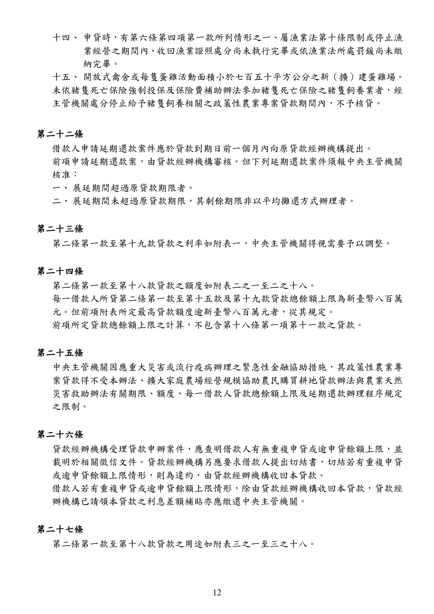
展開查看PDF原始文字層
十四、 申貸時，有第六條第四項第一款所列情形之一、屬漁業法第十條限制或停止漁 業經營之期間內、 收回漁業證照處分尚未執行完畢或依漁業法所處罰鍰尚未繳 納完畢。 十五、 開放式禽舍或每隻蛋雞活動面積小於七百五十平方公分之新（擴）建蛋雞場。 未依豬隻死亡保險強制投保及保險費補助辦法參加豬隻死亡保險之豬隻飼養業者，經 主管機關處分停止給予豬隻飼養相關之政策性農業專案貸款期間內，不予核貸。 第二十二條 借款人申請延期還款案件應於貸款到期日前一個月內向原貸款經辦機構提出。 前項申請延期還款案，由貸款經辦機構審核。但下列延期還款案件須報中央主管機關 核准： 一、 展延期間超過原貸款期限者。 二、 展延期間未超過原貸款期限，其剩餘期限非以平均攤還方式辦理者。 第二十三條 第二條第一款至第十九款貸款之利率如附表一，中央主管機關得視需要予以調整。 第二十四條 第二條第一款至第十八款貸款之額度如附表二之一至二之十八。 每一借款人所貸第二條第一款至第十五款及第 十九款貸款總餘額上限為新臺幣八百萬 元。但前項附表所定最高貸款額度逾新臺幣八百萬元者，從其規定。 前項所定貸款總餘額上限之計算，不包含第十八條第一項第十一款之貸款。 第二十五條 中央主管機關因應重大災害或流行疫病辦理之緊急性金融協助措施，其政策性農業專 案貸款得不受本辦法、擴大家庭農場經營規模協助農民購買耕地貸款辦法與農業天然 災害救助辦法有關期限、額度、每一借款人貸款總餘額上限及延期還款辦理程序規定 之限制。 第二十六條 貸款經辦機構受理貸款申辦案件，應查明借款人有無重複申貸或逾申貸餘額上限，並 載明於相關徵信文件。貸款經辦機構另應要求借款人提出切結書，切結若有重複申貸 或逾申貸餘額上限情形，則為違約，由貸款經辦機構收回本貸款。 借款人若有重複申貸或逾申貸餘額上限情形，除由貸款經辦機構收回本貸款，貸款經 辦機構已請領本貸款之利息差額補貼亦應繳還中央主管機關。 第二十七條 第二條第一款至第十八款貸款之用途如附表三之一至三之十八。
手冊頁：13 PDF頁：15／359
第二條第一款至第十九款貸款由貸款經辦機構按核定金額一次或分次撥付；其屬資本支出者，借款人應檢具相關憑證。
前項貸款款項撥入借款人帳戶後，該款項支出符合下列情形之一者，借款人應以轉帳、匯款方式，或以由貸款經辦機構付款之劃平行線禁止轉讓記名支票支付交易相對人：
一、農機貸款、輔導漁業經營貸款用於汰建或購買漁船、農業科技園區進駐業者優惠貸款、農業節能減碳貸款、休閒農場貸款、農民組織及農企業產銷經營及研發創新貸款、農民組織及農企業天然災害復耕復建貸款及擴大家庭農場經營規模協助農民購買耕地貸款，屬資本支出。
二、前款以外貸款屬資本支出，且單筆支出金額達新臺幣五十萬元以上。
借款人提出之憑證確能證明款項支付交易相對人，或於向貸款經辦機構申貸後未獲撥款前，已先將款項支付交易相對人，並提出確能證明款項支付交易相對人之憑證者，不受前項有關支付方式規定之限制。
第二十八條第二條第一款至第七款及第九款至第十五款之貸款，貸款經辦機構應依下列規定，辦理貸款用途及經營狀況查驗：
一、貸放後六個月內，應確實查驗相關資金用途是否符合核定之貸款用途並作成書面紀錄。
二、前款查驗後於貸款存續期間，應視借款人還款情形，再辦理查驗，確實查驗借款人是否實際經營及有無違反第二十一條規定情事並作成書面紀錄。但下列貸款，於貸款存續期間內，每年應至少辦理一次查驗：
(一) 農漁會事業發展貸款、小地主大專業農貸款、農業節能減碳貸款、青壯年農民從農貸款、休閒農場貸款及農民組織及農企業產銷經營及研發創新貸款。
(二) 輔導農糧業經營貸款用途為改善或新建菇類栽培場、提升畜禽產業經營貸款用途為改善或新建畜禽舍或輔導漁業經營貸款用途為改善或新建室內養殖設施，以設置屋頂型綠能設施之貸款。
(三) 輔導漁業經營貸款用途為新建室內養殖設施，其屋頂構造為太陽光電發電設施(備)材質之貸款。
借款人未依貸款用途運用、未實際經營或經營狀況違反第二十一條第一項規定者，貸款經辦機構應督促限期改正，無法改正或未依限改正者，應收回其貸款，貸款經辦機構已請領之利息差額補貼應繳還中央主管機關。
借款人申貸時有第二十一條第二項規定情事，於核貸後發現者，應收回其貸款，貸款經辦機構已請領之利息差額補貼應繳還中央主管機關。於貸款存續期間，經主管機關依豬隻死亡保險強制投保及保險費補助辦法處分停止給予豬隻飼養相關之政策性農業專案貸款期間內，不予利息差額補貼。
第二十九條中央主管機關委託全國農業金庫辦理政策性農業專案貸款事項如下：
一、宣導及推動。
二、帳務處理。
三、財務收支。
查看PDF原始文字層
第二條第一款至第十九款貸款由貸款經辦機構按核定金額一次或分次撥付；其屬資本 支出者，借款人應檢具相關憑證。 前項貸款款項撥入借款人帳戶後 ， 該款項支出符合下列情形之一者 ， 借款人應以轉帳 、 匯款方式，或以由貸款經辦機構付款之劃平行線禁止轉讓記名支票支付交易相對人： 一、 農機貸款、輔導漁業經營貸款用於汰建或購買漁船、農業科技園區進駐業者優惠 貸款、農業節能減碳貸款、休閒農場貸款、農民組織及農企業產銷經營及研發創 新貸款、農民組織及農企業天然災害復耕復建貸款及擴大家庭農場經營規模協助 農民購買耕地貸款，屬資本支出。 二、 前款以外貸款屬資本支出，且單筆支出金額達新臺幣五十萬元以上。 借款人提出之憑證確能證明款項支付交易相對人，或於向貸款經辦機構申貸後未獲撥 款前，已先將款項支付交易相對人，並提出確能證明款項支付交易相對人之憑證者， 不受前項有關支付方式規定之限制。 第二十八條 第二條第一款至第七款及第九款至第十五款之貸款，貸款經辦機構應依下列規定，辦 理貸款用途及經營狀況查驗： 一、 貸放後六個月內，應確實查驗相關資金用途是否符合核定之貸款用途並作成書面 紀錄。 二、 前款查驗後於貸款存續期間，應視借款人還款情形，再辦理查驗，確實查驗借款 人是否實際經營及有無違反第二十一條規定情事並作成書面紀錄。但下列貸款， 於貸款存續期間內，每年應至少辦理一次查驗： (一) 農漁會事業發展貸款、小地主大專業農貸款、農業節能減碳貸款、青壯年農 民從農貸款、 休閒農場貸款及農民組織及農企業產銷經營及研發創新貸款 。 (二) 輔導農糧業經營貸款用途為改善或新建菇類栽培場 、 提升畜禽產業經營貸款 用途為改善或新建畜禽舍或輔導漁業經營貸款用途為改善或新建室內養殖 設施，以設置屋頂型綠能設施之貸款。 (三) 輔導漁業經營貸款用途為新建室內養殖設施 ， 其屋頂構造為太陽光電發電設 施(備)材質之貸款。 借款人未依貸款用途運用、未實際經營或經營狀況違反第二十一條第一項規定者，貸 款經辦機構應督促限期改正，無法改正或未依限改正者，應收回其貸款，貸款經辦機 構已請領之利息差額補貼應繳還中央主管機關。 借款人申貸時有第二十一條第二項規定情事，於核貸後發現者，應收回其貸款，貸款 經辦機構已請領之利息差額補貼應繳還中央主管機關。於貸款存續期間，經主管機關 依豬隻死亡保險強制投保及保險費補助辦法處分停止給予豬隻飼養相關之政策性農業 專案貸款期間內，不予利息差額補貼。 第二十九條 中央主管機關委託全國農業金庫辦理政策性農業專案貸款事項如下： 一、宣導及推動。 二、帳務處理。 三、財務收支。
手冊頁：14 PDF頁：16／359
四、統計業務。
五、對貸款經辦機構之輔導查核。
第三十條中央主管機關委託全國農業金庫辦理前條事項，應簽訂書面契約，載明下列事項：
一、委託事項。
二、委託期間。
三、所需費用及支付方式。
四、委託事項之管考。
五、違反契約之處理。
六、契約之終止及解除。
七、不可抗力之範圍及處理。
八、其他有關雙方權利義務事項。
第三十一條全國農業金庫不得將第二十九條委託事項之全部或一部轉委託他人辦理。
第三十二條全國農業金庫每年度辦理第二十九條委託事項所需費用，由中央主管機關在當年度預算範圍內支付。
第三十三條全國農業金庫辦理第二十九條之委託事項，應將當年度辦理情形於次年二月底前報請中央主管機關備查。
中央主管機關得隨時派員查核全國農業金庫辦理委託事項情形，或令其限期提報報表、報告或其他有關資料。
第三十四條本辦法中華民國一百零五年三月二十二日修正生效前，已承作之改善財務貸款，其貸款資格、期限、利率等條件，仍依修正前之規定辦理。
本辦法中華民國一百十年八月一日修正生效前，已依第八條第一項第三款規定承作之農民經營及產銷班貸款，其貸款資格、期限、利率等條件，仍依修正前之規定辦理。
第三十五條本辦法自中華民國一百零五年三月二十二日施行。
本辦法修正條文之施行日期，除中華民國一百零五年五月二十三日修正發布之條文，自一百零五年五月二十三日施行，及一百零五年十月七日修正發布之條文，自一百零五年十月十二日施行外，由中央主管機關定之。
查看PDF原始文字層
四、統計業務。 五、對貸款經辦機構之輔導查核。 第三十條 中央主管機關委託全國農業金庫辦理前條事項，應簽訂書面契約，載明下列事項： 一、委託事項。 二、委託期間。 三、所需費用及支付方式。 四、委託事項之管考。 五、違反契約之處理。 六、契約之終止及解除。 七、不可抗力之範圍及處理。 八、其他有關雙方權利義務事項。 第三十一條 全國農業金庫不得將第二十九條委託事項之全部或一部轉委託他人辦理。 第三十二條 全國農業金庫每年度辦理第二十九條委託事項所需費用，由中央主管機關在當年度預 算範圍內支付。 第三十三條 全國農業金庫辦理第二十九條之委託事項，應將當年度辦理情形於次年二月底前報請 中央主管機關備查。 中央主管機關得隨時派員查核全國農業金庫辦理委託事項情形 ， 或令其限期提報報表 、 報告或其他有關資料。 第三十四條 本辦法中華民國一百零五年三月二十二日修正生效前，已承作 之改善財務貸款，其貸 款資格、期限、利率等條件，仍依修正前之規定辦理。 本辦法中華民國一百十年八月一日修正生效前，已依第八條第一項第三款規定承作之 農民經營及產銷班貸款，其貸款資格、期限、利率等條件，仍依修正前之規定辦理。 第三十五條 本辦法自中華民國一百零五年三月二十二日施行。 本辦法修正條文之施行日期，除中華民國一百零五年五月二十三日修正發布之條文， 自一百零五年五月二十三日施行，及一百零五年十月七日修正發布之條文，自一百零 五年十月十二日施行外，由中央主管機關定之。
手冊頁：15 PDF頁：17／359
{kind=link}
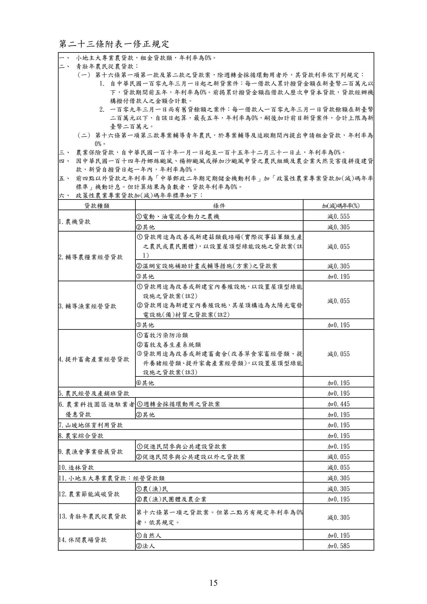
展開查看PDF原始文字層
第二十三條附表一修正規定 一、 小地主大專業農貸款，租金貸款類，年利率為0%。 二、 青壯年農民從農貸款： (一) 第十六條第一項第一款及第二款之貸款案，除週轉金採循環動用者外，其貸款利率依下列規定： 1. 自中華民國一百零九年三月一日起之新貸案件：每一借款人累計撥貸金額在新臺幣二百萬元以 下，貸款期間前五年，年利率為0%。前揭累計撥貸金額指借款人歷次申貸本貸款，貸款經辦機 構撥付借款人之金額合計數。 2. 一百零九年三月一日尚有舊貸餘額之案件：每一借款人一百零九年三月一日貸款餘額在新臺幣 二百萬元以下，自該日起算，最長五年，年利率為0%，嗣後加計前目新貸案件，合計上限為新 臺幣二百萬元。 (二) 第十六條第一項第三款專案輔導青年農民，於專案輔導及追蹤期間內提出申請租金貸款，年利率為 0%。 三、 農業保險貸款，自中華民國一百十年一月一日起至一百十五年十二月三十一日止，年利率為0%。 四、 因中華民國一百十四年丹娜絲颱風、楊柳颱風或樺加沙颱風申貸之農民組織及農企業天然災害復耕復建貸 款，新貸自撥貸日起一年內，年利率為0%。 五、 前四點以外貸款之年利率為「中華郵政二年期定期儲金機動利率」加「政策性農業專案貸款加(減)碼年率 標準」機動計息。但計算結果為負數者，貸款年利率為0%。 六、 政策性農業專案貸款加(減)碼年率標準如下： 貸款種類 條件 加(減)碼 年 率(%) 1.農機貸款 ①電動、油電混合動力之農機 減0.555 ②其他 減0.305 2.輔導農糧業經營貸款 ①貸款用途為改善或新建菇類栽培場(實際從事菇蕈類生產 之農民或農民團體)，以設置屋頂型綠能設施之貸款案(註 1) 減0.055 ②溫網室設施補助計畫或輔導措施(方案)之貸款案 減0.305 其他 加0.195 3.輔導漁業經營貸款 ①貸款用途為改善或新建室內養殖設施 ， 以設置屋頂型綠能 設施之貸款案(註2) ②貸款用途為新建室內養殖設施 ， 其屋頂構造為太陽光電發 電設施(備)材質之貸款案(註2) 減0.055 其他 加0.195 4.提升畜禽產業經營貸款 ①畜牧污染防治類 ②畜牧友善生產系統類 貸款用途為改善或新建畜禽舍(改善草食家畜經營類、提 升養豬經營類 、 提升家禽產業經營類)， 以設置屋頂型綠能 設施之貸款案(註3) 減0.055 其他 加0.195 5.農民經營及產銷班貸款 加0.195 6.農業科技園區進駐業者 優惠貸款 ①週轉金採循環動用之貸款案 加0.445 ②其他 加0.195 7.山坡地保育利用貸款 加0.195 8.農家綜合貸款 加0.195 9.農漁會事業發展貸款 ①促進民間參與公共建設貸款案 加0.195 ②促進民間參與公共建設以外之貸款案 減0.055 10.造林貸款 減0.055 11.小地主大專業農貸款：經營貸款類 減0.305 12.農業節能減碳貸款 ①農(漁)民 減0.305 ②農(漁)民團體及農企業 加0.195 13.青壯年農民從農貸款 第十六條第一項之貸款案。但第二點另有規定年利率為 0% 者，依其規定。 減0.305 14.休閒農場貸款 ①自然人 加0.195 ②法人 加0.585
手冊頁：16 PDF頁：18／359
{kind=link}
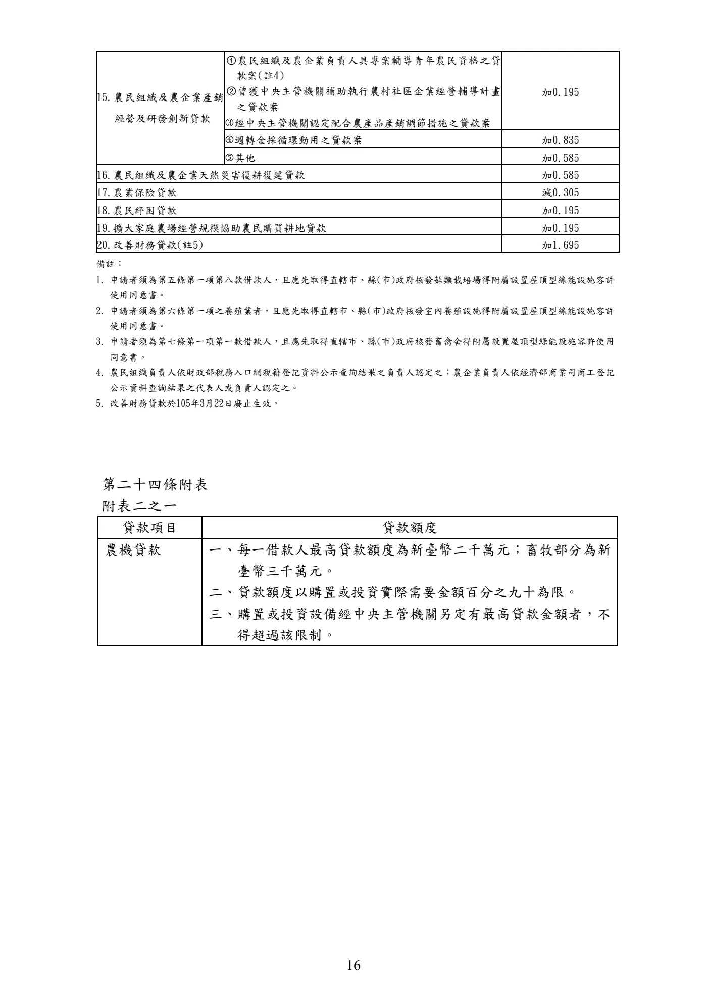
展開查看PDF原始文字層
15.農民組織及農企業產銷 經營及研發創新貸款 ①農民組織及農企業負責人具專案輔導青年農民資格之貸 款案(註4) ②曾獲中央主管機關補助執行農村社區企業經營輔導計畫 之貸款案 經中央主管機關認定配合農產品產銷調節措施之貸款案 加0.195 週轉金採循環動用之貸款案 加0.835 其他 加0.585 16.農民組織及農企業天然災害復耕復建貸款 加0.585 17.農業保險貸款 減0.305 18.農民紓困貸款 加0.195 19.擴大家庭農場經營規模協助農民購買耕地貸款 加0.195 20.改善財務貸款(註5) 加1.695 備註： 1. 申請者須為第五條第一項第八款借款人，且應先取得直轄市、縣(市)政府核發菇類栽培場得附屬設置屋頂型綠能設施容許 使用同意書。 2. 申請者須為第六條第一項之養殖業者，且應先取得直轄市、縣(市)政府核發室內養殖設施得附屬設置屋頂型綠能設施容許 使用同意書。 3. 申請者須為第七條第一項第一款借款人，且應先取得直轄市、縣(市)政府核發畜禽舍得附屬設置屋頂型綠能設施容許使用 同意書。 4. 農民組織負責人依財政部稅務入口網稅籍登記資料公示查詢結果之負責人認定之；農企業負責人依經濟部商業司商工登記 公示資料查詢結果之代表人或負責人認定之。 5. 改善財務貸款於105年3月22日廢止生效。 第二十四條附表 附表二之一 貸款項目 貸款額度 農機貸款 一、每一借款人最高貸款額度為新臺幣二千萬元 ；畜牧部分為新 臺幣三千萬元。 二、貸款額度以購置或投資實際需要金額百分之九十為限。 三、購置或投資設備經中央主管機關另定有最高貸款金額者，不 得超過該限制。
手冊頁：17 PDF頁：19／359
{kind=link}
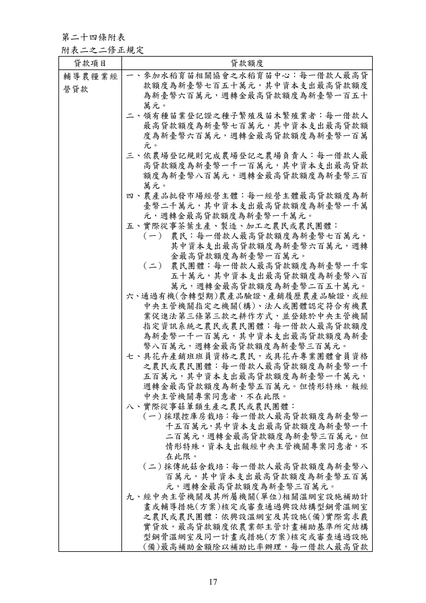
展開查看PDF原始文字層
第二十四條附表 附表二之二修正規定 貸款項目 貸款額度 輔導農糧業經 營貸款 一、參加水稻育苗相關協會之水稻育苗中心：每一借款人最高貸 款額度為新臺幣七百五十萬元，其中資本支出最高貸款額度 為新臺幣六百萬元，週轉金最高貸款額度為新臺幣一百五十 萬元。 二、領有種苗業登記證之種子繁殖及苗木繁殖業者：每一借款人 最高貸款額度為新臺幣七百萬元，其中資本支出最高貸款額 度為新臺幣六百萬元，週轉金最高貸款額度為新臺幣一百萬 元。 三、依農場登記規則完成農場登記之農場負責人：每一借款人最 高貸款額度為新臺幣一千一百萬元，其中資本支出最高貸款 額度為新臺幣八百萬元，週轉金最高貸款額度為新臺幣三百 萬元。 四、農產品批發市場經營主體：每一經營主體最高貸款額度為新 臺幣二千萬元，其中資本支出最高貸款額度為新臺幣一千萬 元，週轉金最高貸款額度為新臺幣一千萬元。 五、實際從事茶葉生產、製造、加工之農民或農民團體： （一） 農民：每一借款人最高貸款額度為新臺幣七百萬元， 其中資本支出最高貸款額度為新臺幣六百萬元，週轉 金最高貸款額度為新臺幣一百萬元。 （二） 農民團體：每一借款人最高貸款額度為新臺幣一千零 五十萬元，其中資本支出最高貸款額度為新臺幣八百 萬元，週轉金最高貸款額度為新臺幣二百五十萬元。 六 、 通過有機(含轉型期)農產品驗證 、 產銷履歷農產品驗證 ， 或經 中央主管機關指定之機關(構)、法人或團體認定符合有機農 業促進法第三條第三款之耕作方式，並登錄於中央主管機關 指定資訊系統之農民或農民團體：每一借款人最高貸款額度 為新臺幣一千一百萬元，其中資本支出最高貸款額度為新臺 幣八百萬元，週轉金最高貸款額度為新臺幣三百萬元。 七、具花卉產銷班班員資格之農民，或具花卉專業團體會員資格 之農民或農民團體：每一借款人最高貸款額度為新臺幣一千 五百萬元，其中資本支出最高貸款額度為新臺幣一千萬元， 週轉金最高貸款額度為新臺幣五百萬元。但情形特殊，報經 中央主管機關專案同意者，不在此限。 八、實際從事菇蕈類生產之農民或農民團體： （一） 採環控庫房栽培：每一借款人最高貸款額度為新臺幣一 千五百萬元 ， 其中資本支出最高貸款額度為新臺幣一千 二百萬元，週轉金最高貸款額度為新臺幣三百萬元。但 情形特殊，資本支出報經中央主管機關專案同意者，不 在此限。 （二） 採傳統菇舍栽培：每一借款人最高貸款額度為新臺幣八 百萬元，其中資本支出最高貸款額度為新臺幣五百萬 元，週轉金最高貸款額度為新臺幣三百萬元。 九、經中央主管機關及其所屬機關(單位)相關溫網室設施補助計 畫或輔導措施(方案)核定或審查通過興設結構型鋼骨溫網室 之農民或農民團體：依興設溫網室及其設施(備)實際需求覈 實貸放，最高貸款額度依農業部主管計畫補助基準所定結構 型鋼骨溫網室及同一計畫或措施(方案)核定或審查通過設施 (備)最高補助金額除以補助比率辦理，每一借款人最高貸款
手冊頁：18 PDF頁：20／359
{kind=link}
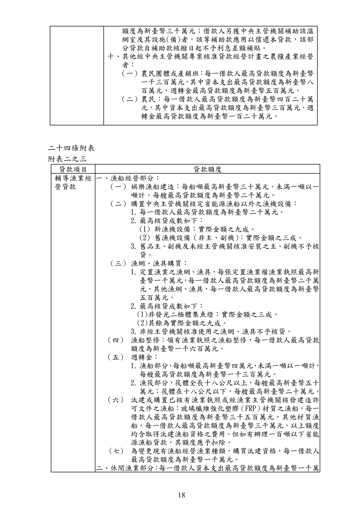
展開查看PDF原始文字層
額度為新臺幣三千萬元；借款人另獲中央主管機關補助該溫 網室及其設施(備)者，該等補助款應用以償還本貸款 ，該部 分貸款自補助款核撥日起不予利息差額補貼。 十、其他經中央主管機關專案核准貸款經營計畫之農糧產業經營 者： （一）農民團體或產銷班 ： 每一借款人最高貸款額度為新臺幣 一千三百萬元 ， 其中資本支出最高貸款額度為新臺幣八 百萬元，週轉金最高貸款額度為新臺幣五百萬元。 （二）農民：每一借款人最高貸款額度為新臺幣四百二十萬 元，其中資本支出最高貸款額度為新臺幣三百萬元，週 轉金最高貸款額度為新臺幣一百二十萬元。 二十四條附表 附表二之三 貸款項目 貸款額度 輔導漁業經 營貸款 一、漁船經營部分： （一） 娛樂漁船建造：每船噸最高新臺幣三十萬元，未滿一噸以一 噸計，每艘最高貸款額度為新臺幣二千萬元。 （二） 購置中央主管機關核定省能源漁船以外之漁機設備： 1. 每一借款人最高貸款額度為新臺幣二千萬元。 2. 最高核貸成數如下： (1) 新漁機設備：實際金額之九成。 (2) 舊漁機設備（非主、副機） ：實際金額之三成。 3. 舊品主、副機及未經主管機關核准安裝之主、副機不予核 貸。 （三） 漁網、漁具購買： 1. 定置漁業之漁網、漁具，每張定置漁業權漁業執照最高新 臺幣一千萬元 ， 每一借款人最高貸款額度為新臺幣二千萬 元，其他漁網、漁具，每一借款人最高貸款額度為新臺幣 五百萬元。 2. 最高核貸成數如下： (1)非發光二極體集魚燈：實際金額之三成。 (2)其餘為實際金額之九成。 3. 非經主管機關核准使用之漁網、漁具不予核貸。 （四） 漁船整修：領有漁業執照之漁船整修，每一借款人最高貸款 額度為新臺幣一千六百萬元。 （五） 週轉金： 1. 漁船部分 ， 每船噸最高新臺幣四萬元 ， 未滿一噸以一噸計 ， 每艘最高貸款額度為新臺幣一千三百萬元。 2. 漁筏部分，筏體全長十八公尺以上，每艘最高新臺幣五十 萬元；筏體在十八公尺以下，每艘最高新臺幣二十萬元。 （六） 汰建或購置已核有漁業執照或經漁業主管機關核發建造許 可文件之漁船：玻璃纖維強化塑膠 （FRP） 材質之漁船，每一 借款人最高貸款額度為新臺幣三千五百萬元，其他材質漁 船，每一借款人最高貸款額度為新臺幣三千萬元，以上額度 均含取得汰建漁船資格之費用。但如有辦理一百噸以下省能 源漁船貸款，其額度應予扣除。 (七) 為變更現有漁船經營漁業種類，購買汰建資格，每一借款人 最高貸款額度為新臺幣一千萬元。 二、 休閒漁業部分 ： 每一借款人資本支出最高貸款額度為新臺幣一千萬
手冊頁：19 PDF頁：21／359
{kind=link}
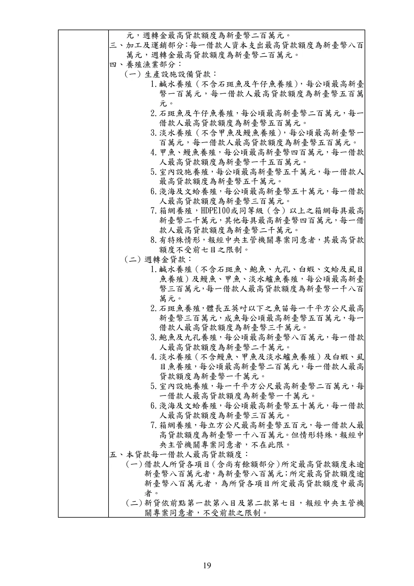
展開查看PDF原始文字層
元，週轉金最高貸款額度為新臺幣二百萬元。 三、 加工及運銷部分 ： 每一借款人資本支出最高貸款額度為新臺幣八百 萬元，週轉金最高貸款額度為新臺幣二百萬元。 四、 養殖漁業部分： (一) 生產設施設備貸款： 1.鹹水養殖（不含石斑魚及午仔魚養殖） ，每公頃最高新臺 幣一百萬元，每一借款人最高貸款額度為新臺幣五百萬 元。 2.石斑魚及午仔魚養殖，每公頃最高新臺幣二百萬元，每一 借款人最高貸款額度為新臺幣五百萬元。 3.淡水養殖（不含甲魚及鰻魚養殖） ，每公頃最高新臺幣一 百萬元，每一借款人最高貸款額度為新臺幣五百萬元。 4.甲魚、鰻魚養殖，每公頃最高新臺幣四百萬元，每一借款 人最高貸款額度為新臺幣一千五百萬元。 5.室內設施養殖，每公頃最高新臺幣五千萬元，每一借款人 最高貸款額度為新臺幣五千萬元。 6.淺海及文蛤養殖，每公頃最高新臺幣五十萬元，每一借款 人最高貸款額度為新臺幣三百萬元。 7.箱網養殖，HDPE100或同等級（含）以上之箱網每具最高 新臺幣二千萬元，其他每具最高新臺幣四百萬元，每一借 款人最高貸款額度為新臺幣二千萬元。 8.有特殊情形，報經中央主管機關專案同意者，其最高貸款 額度不受前七目之限制。 (二) 週轉金貸款： 1.鹹水養殖（不含石斑魚、鮑魚、九孔、白蝦、文蛤及虱目 魚養殖）及鰻魚、甲魚、淡水鱸魚養殖，每公頃最高新臺 幣三百萬元 ， 每一借款人最高貸款額度為新臺幣一千八百 萬元。 2.石斑魚養殖 ，體長五英吋以下之魚苗每一千平方公尺最高 新臺幣三百萬元，成魚每公頃最高新臺幣五百萬元，每一 借款人最高貸款額度為新臺幣三千萬元。 3.鮑魚及九孔養殖，每公頃最高新臺幣八百萬元，每一借款 人最高貸款額度為新臺幣二千萬元。 4.淡水養殖（不含鰻魚、甲魚及淡水鱸魚養殖）及白蝦、虱 目魚養殖，每公頃最高新臺幣二百萬元，每一借款人最高 貸款額度為新臺幣一千萬元。 5.室內設施養殖，每一千平方公尺最高新臺幣二百萬元，每 一借款人最高貸款額度為新臺幣一千萬元。 6.淺海及文蛤養殖，每公頃最高新臺幣五十萬元，每一借款 人最高貸款額度為新臺幣三百萬元。 7.箱網養殖，每立方公尺最高新臺幣五百元，每一借款人最 高貸款額度為新臺幣一千八百萬元。但情形特殊，報經中 央主管機關專案同意者，不在此限。 五、 本貸款每一借款人最高貸款額度： (一) 借款人所貸各項目 （含尚有餘額部分） 所定最高貸款額度未逾 新臺幣八百萬元者 ， 為新臺幣八百萬元 ； 所定最高貸款額度逾 新臺幣八百萬元者，為所貸各項目所定最高貸款額度中最高 者。 (二) 新貸依前點第一款第八目及第二款第七目，報經中央主管機 關專案同意者，不受前款之限制。
手冊頁：20 PDF頁：22／359
{kind=link}
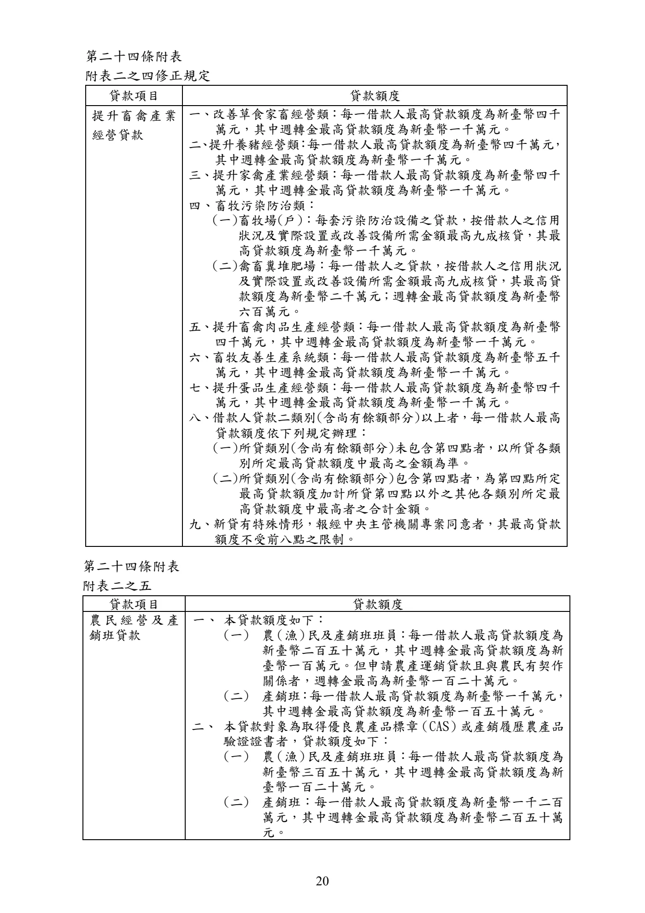
展開查看PDF原始文字層
第二十四條附表
附表二之四修正規定
貸款項目 貸款額度
提升畜禽產業
經營貸款
一、改善草食家畜經營類：每一借款人最高貸款額度為新臺幣四千
萬元，其中週轉金最高貸款額度為新臺幣一千萬元。
二 、 提升養豬經營類 ： 每一借款人最高貸款額度為新臺幣四千萬元 ，
其中週轉金最高貸款額度為新臺幣一千萬元。
三、提升家禽產業經營類：每一借款人最高貸款額度為新臺幣四千
萬元，其中週轉金最高貸款額度為新臺幣一千萬元。
四、畜牧污染防治類：
(一)畜牧場(戶)：每套污染防治設備之貸款，按借款人之信用
狀況及實際設置或改善設備所需金額最高九成核貸，其最
高貸款額度為新臺幣一千萬元。
(二)禽畜糞堆肥場：每一借款人之貸款，按借款人之信用狀況
及實際設置或改善設備所需金額最高九成核貸，其最高貸
款額度為新臺幣二千萬元；週轉金最高貸款額度為新臺幣
六百萬元。
五、提升畜禽肉品生產經營類：每一借款人最高貸款額度為新臺幣
四千萬元，其中週轉金最高貸款額度為新臺幣一千萬元。
六、畜牧友善生產系統類：每一借款人最高貸款額度為新臺幣五千
萬元，其中週轉金最高貸款額度為新臺幣一千萬元。
七、提升蛋品生產經營類：每一借款人最高貸款額度為新臺幣四千
萬元，其中週轉金最高貸款額度為新臺幣一千萬元。
八、借款人貸款二類別(含尚有餘額部分)以上者，每一借款人最高
貸款額度依下列規定辦理：
(一)所貸類別(含尚有餘額部分)未包含第四點者，以所貸各類
別所定最高貸款額度中最高之金額為準。
(二)所貸類別(含尚有餘額部分)包含第四點者，為第四點所定
最高貸款額度加計所貸第四點以外之其他各類別所定最
高貸款額度中最高者之合計金額。
九、新貸有特殊情形，報經中央主管機關專案同意者，其最高貸款
額度不受前八點之限制。
第二十四條附表
附表二之五
貸款項目 貸款額度
農 民 經 營 及 產
銷班貸款
一、 本貸款額度如下：
(一) 農 （漁） 民及產銷班班員 ： 每一借款人最高貸款額度為
新臺幣二百五十萬元，其中週轉金最高貸款額度為新
臺幣一百萬元。但申請農產運銷貸款且與農民有契作
關係者，週轉金最高為新臺幣一百二十萬元。
(二) 產銷班 ： 每一借款人最高貸款額度為新臺幣一千萬元 ，
其中週轉金最高貸款額度為新臺幣一百五十萬元。
二、 本貸款對象為取得優良農產品標章 （CAS） 或產銷履歷農產品
驗證證書者，貸款額度如下：
(一) 農 （漁） 民及產銷班班員 ： 每一借款人最高貸款額度為
新臺幣三百五十萬元，其中週轉金最高貸款額度為新
臺幣一百二十萬元。
(二) 產銷班：每一借款人最高貸款額度為新臺幣一千二百
萬元，其中週轉金最高貸款額度為新臺幣二百五十萬
元。手冊頁：21 PDF頁：23／359

展開查看PDF原始文字層
第二十四條附表 附表二之六 貸款項目 貸款額度 農業科技 園區進駐 業者優惠 貸款 一、每一借款人最高貸款額度為新臺幣八千萬元，其中週轉金最高貸款額 度為新臺幣一千萬元。但於農業科技園區內興建廠房之資本支出與週 轉金，經中央主管機關專案同意者，不在此限。 二、貸款用途屬資本支出者，其貸款額度並以實際所需金額百分之七十為 限。 第二十四條附表 附表二之七 貸款項目 貸款額度 山坡地保育利 用貸款 一、基本公共設施： 最高貸款額度不得超過興建、修建或加強公共設施之攤付費。 二、資本支出貸款： （無補助時依下列標準，有補助時應扣除補助 款後核貸。） （一）水土保持處理： 下列各項目，均為新築(建)機械施工，至於機械修護、 人工新築（建） ，修護部分及未列項目，請主辦機關依實 際情況核計其最高貸款額度。 1. 山邊溝：每公頃新臺幣一萬二千元。 2. 石墻：每公頃新臺幣三萬五千元。 3. 平台堦段：每公頃新臺幣六萬元。 4. 安全排水系統：每公尺新臺幣八百元。 5. 台壁植草 ： 每平方公尺新臺幣二十五元 （成活率在70% 以上） 。 6. 山邊溝植草：每平方公尺新臺幣二十五元（成活率在 70%以上） 。 7. 全園植草：每公頃新臺幣十萬元（成活率在70%以上， 每公頃5,000平方公尺以上） 。 8. 道路植草 ： 每平方公尺新臺幣三十元 （成活率在70%以 上） 。 9. 蝕溝控制：依設計書施工，扣除政府之補助外，每處 最高不得超過新臺幣九萬元。 10. 聯絡道附屬工程 ： 每公里新臺幣六十五萬元 （包括路 基工程、鋪設級配及水土保持工程） 。 11. 鑿井工程：每公尺新臺幣三千五百元。 12. 水泥路面 ： 每平方公尺新臺幣二百五十元 （以厚度十 二公分計算） 。 13. 蓄水池：以設計圖發包施工，扣除政府補助額外，十 噸者每座最高不得超過新臺幣三萬元；二十噸者每 座最高不得超過新臺幣三萬五千元；三十噸者每座 最高不得超過新臺幣五萬元。 14. 小型灌溉：依設計書施工，扣除政府之補助額外，每 處最高不得超過新臺幣五萬元。 15. 園內道：每公尺新臺幣五十元。 16. 駁坎（混凝土） ：每平方公尺新臺幣一千二百元。 （二）農業經營： 1. 農業生產資材：每公頃新臺幣四十萬元（包括農藥、 肥料、有機質等生產必需品） 。 2. 農業生產管理設施：每公頃以實際需要配合款額核貸
手冊頁：22 PDF頁：24／359

展開查看PDF原始文字層
（包括設施骨架、生產管理所需噴藥、灌溉、棚架及
其他設施、設備等） 。
3. 農產品儲運設施：每處以實際需要配合款額核貸（包
括集貨場、儲藏庫、容器等及其他附屬設備，其設施
應依有關法令規定辦理手續。如屬公共設施者，應依
公共設施貸款之規定辦理） 。
4. 農產品處理加工設施：每處以實際需要配合款額核貸
（包括製茶、醃漬、烘培等及其他農產品加工設施與
設備；農產品加工設施應依食品安全衛生管理法規定
辦理） 。
5. 多目標自動噴藥設施：每公頃新臺幣三十萬元。
三、週轉資金貸款：
農業經營
1. 水果分級包裝紙箱：每公頃新臺幣一萬元。
2. 果實套袋：每公頃新臺幣二萬元。
3. 蔬菜雜糧生產：每公頃新臺幣二萬元。
四、每一借款人最高貸款額度為新臺幣四百萬元，如借款人已另
辦理公共設施貸款，其公共設施部分款項，不在此限。
第二十四條附表
附表二之八
貸款項目 貸款額度
農家綜合貸款 每一借款人最高貸款額度為新臺幣四十萬元。
第二十四條附表
附表二之九
貸款項目 貸款額度
農漁會事業發
展貸款
每一農(漁)會單一貸款案件最高貸款額度為新臺幣五千萬元 ， 貸款
餘額最高以新臺幣八千萬元為限。但情形特殊，報經中央主管機關
專案同意者，不在此限。
第二十四條附表
附表二之十
貸款項目 貸款額度
造林貸款 依投入資金需求覈實貸款 ， 每一借款人最高貸款額度為新臺幣五百
萬元，其中週轉金最高貸款額度為新臺幣一百萬元。
第二十四條附表
附表二之十一
貸款項目 貸款額度
小地主大專業農
貸款
貸款額度如下，並應扣除政府補助金額：
一、租金貸款類：以承租金額貸放。
二、經營貸款類：
(一) 專業農民：每一借款人最高貸款額度為新臺幣一千萬元，
其中週轉金依借款人經營規模覈實貸放 ，最高貸款額度為
新臺幣六百萬元 ； 資本支出以其實際投資金額百分之九十手冊頁：23 PDF頁：25／359
{kind=link}
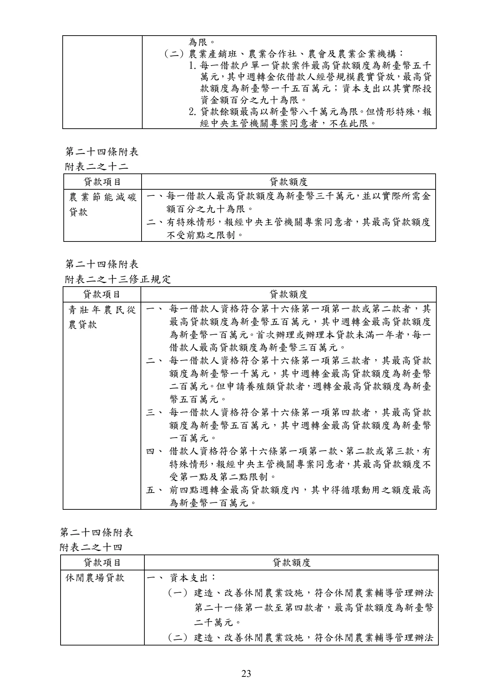
展開查看PDF原始文字層
為限。 (二) 農業產銷班、農業合作社、農會及農業企業機構： 1. 每一借款戶單一貸款案件最高貸款額度為新臺幣五千 萬元 ， 其中週轉金依借款人經營規模覈實貸放 ，最高貸 款額度為新臺幣 一千五百萬元；資本支出以其實際投 資金額百分之九十為限。 2. 貸款餘額最高以新臺幣八千萬元為限 。 但情形特殊 ， 報 經中央主管機關專案同意者，不在此限。 第二十四條附表 附表二之十二 貸款項目 貸款額度 農業節能減碳 貸款 一、 每一借款人最高貸款額度為新臺幣三千萬元 ， 並以實際所需金 額百分之九十為限。 二、 有特殊情形，報經中央主管機關專案同意者，其最高貸款額度 不受前點之限制。 第二十四條附表 附表二之十三修正規定 貸款項目 貸款額度 青 壯 年 農民 從 農貸款 一、 每一借款人資格符合第十六條第一項第一款或第二款者，其 最高貸款額度為新臺幣五百萬元，其中週轉金最高貸款額度 為新臺幣一百萬元 。 首次辦理或辦理本貸款未滿一年者 ， 每一 借款人最高貸款額度為新臺幣三百萬元。 二、 每一借款人資格符合第十六條第一項第三款者，其最高貸款 額度為新臺幣一千萬元，其中週轉金最高貸款額度為新臺幣 二百萬元 。 但申請養殖類貸款者 ， 週轉金最高貸款額度為新臺 幣五百萬元。 三、 每一借款人資格符合第十六條第一項第四款者，其最高貸款 額度為新臺幣五百萬元，其中週轉金最高貸款額度為新臺幣 一百萬元。 四、 借款人資格符合第十六條第一項第一款 、 第二款或第三款 ， 有 特殊情形 ， 報經中央主管機關專案同意者 ， 其最高貸款額度不 受第一點及第二點限制。 五、 前四點週轉金最高貸款額度內，其中得循環動用之額度最高 為新臺幣一百萬元。 第二十四條附表 附表二之十四 貸款項目 貸款額度 休閒農場貸款 一、 資本支出： (一) 建造、改善休閒農業設施，符合休閒農業輔導管理辦法 第二十一條第一款至第四款者，最高貸款額度為新臺幣 二千萬元。 (二) 建造、改善休閒農業設施，符合休閒農業輔導管理辦法
手冊頁：24 PDF頁：26／359
{kind=link}
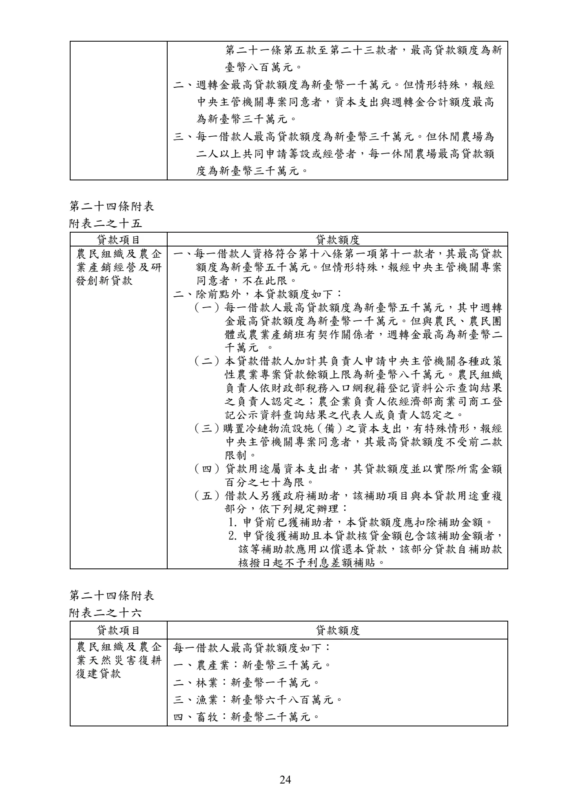
展開查看PDF原始文字層
第二十一條第五款至第二十三款者，最高貸款額度為新 臺幣八百萬元。 二、週轉金最高貸款額度為新臺幣一千萬元。但情形特殊，報經 中央主管機關專案同意者，資本支出與週轉金合計額度最高 為新臺幣三千萬元。 三、每一借款人最高貸款額度為新臺幣三千萬元。但休閒農場為 二人以上共同申請籌設或經營者，每一休閒農場最高貸款額 度為新臺幣三千萬元。 第二十四條附表 附表二之十五 貸款項目 貸款額度 農民組織及農企 業產銷經營及研 發創新貸款 一、每一借款人資格符合第十八條第一項第十一款者，其最高貸款 額度為新臺幣五千萬元。但情形特殊，報經中央主管機關專案 同意者，不在此限。 二、除前點外，本貸款額度如下： （一）每一借款人最高貸款額度為新臺幣五千萬元，其中週轉 金最高貸款額度為新臺幣一千萬元。但與農民、農民團 體或農業產銷班有契作關係者，週轉金最高為新臺幣二 千萬元 。 （二）本貸款借款人加計其負責人申請中央主管機關各種政策 性農業專案貸款餘額上限為新臺幣八千萬元。農民組織 負責人依財政部稅務入口網稅籍登記資料公示查詢結果 之負責人認定之；農企業負責人依經濟部商業司商工登 記公示資料查詢結果之代表人或負責人認定之。 （三） 購置冷鏈物流設施 （備） 之資本支出，有特殊情形，報經 中央主管機關專案同意者，其最高貸款額度不受前二款 限制。 （四）貸款用途屬資本支出者，其貸款額度並以實際所需金額 百分之七十為限。 （五）借款人另獲政府補助者，該補助項目與本貸款用途重複 部分，依下列規定辦理： 1. 申貸前已獲補助者，本貸款額度應扣除補助金額。 2. 申貸後獲補助且本貸款核貸金額包含該補助金額者， 該等補助款應用以償還本貸款，該部分貸款自補助款 核撥日起不予利息差額補貼。 第二十四條附表 附表二之十六 貸款項目 貸款額度 農民組織及農企 業天然災害復耕 復建貸款 每一借款人最高貸款額度如下： 一、農產業：新臺幣三千萬元。 二、林業：新臺幣一千萬元。 三、漁業：新臺幣六千八百萬元。 四、畜牧：新臺幣二千萬元。
手冊頁：25 PDF頁：27／359
{kind=link}
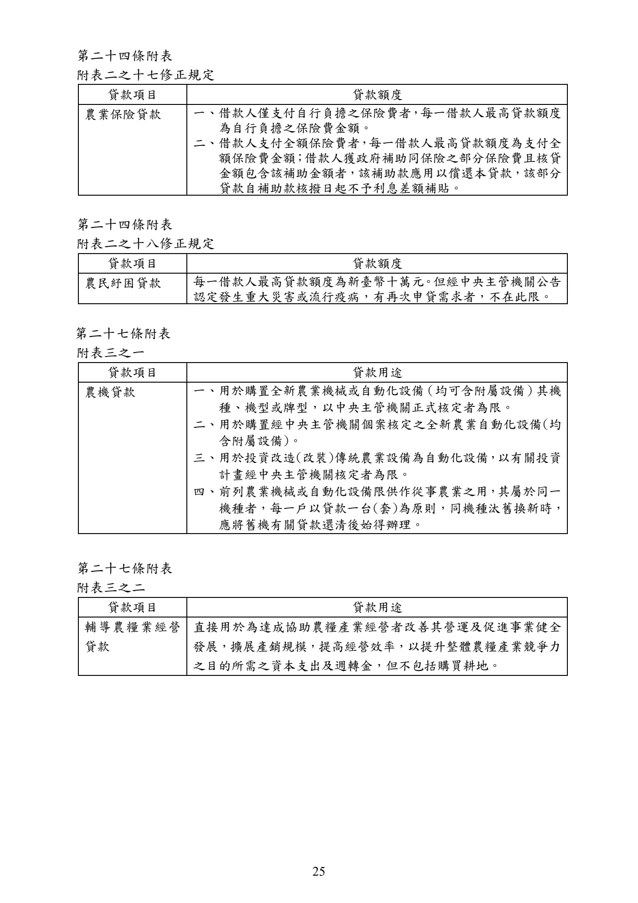
展開查看PDF原始文字層
第二十四條附表 附表二之十七修正規定 貸款項目 貸款額度 農業保險貸款 一、借款人僅支付自行負擔之保險費者 ， 每一借款人最高貸款額度 為自行負擔之保險費金額。 二、借款人支付全額保險費者 ， 每一借款人最高貸款額度為支付全 額保險費金額 ； 借款人獲政府補助同保險之部分保險費且核貸 金額包含該補助金額者，該補助款應用以償還本貸款，該部分 貸款自補助款核撥日起不予利息差額補貼。 第二十四條附表 附表二之十八修正規定 貸款項目 貸款額度 農民紓困貸款 每一借款人最高貸款額度為新臺幣十萬元 。但經中央主管機關公告 認定發生重大災害或流行疫病，有再次申貸需求者，不在此限。 第二十七條附表 附表三之一 貸款項目 貸款用途 農機貸款 一、用於購置全新農業機械或自動化設備 （均可含附屬設備） 其機 種、機型或牌型，以中央主管機關正式核定者為限。 二、用於購置經中央主管機關個案核定之全新農業自動化設備(均 含附屬設備)。 三、用於投資改造(改裝)傳統農業設備為自動化設備 ， 以有關投資 計畫經中央主管機關核定者為限。 四、前列農業機械或自動化設備限供作從事農業之用 ， 其屬於同一 機種者，每一戶以貸款一台(套)為原則，同機種汰舊換新時， 應將舊機有關貸款還清後始得辦理。 第二十七條附表 附表三之二 貸款項目 貸款用途 輔導農糧業經營 貸款 直接用於為達成協助農糧產業經營者改善其營運及促進事業健全 發展，擴展產銷規模，提高經營效率，以提升整體農糧產業競爭力 之目的所需之資本支出及週轉金，但不包括購買耕地。
手冊頁：26 PDF頁：28／359
{kind=link}
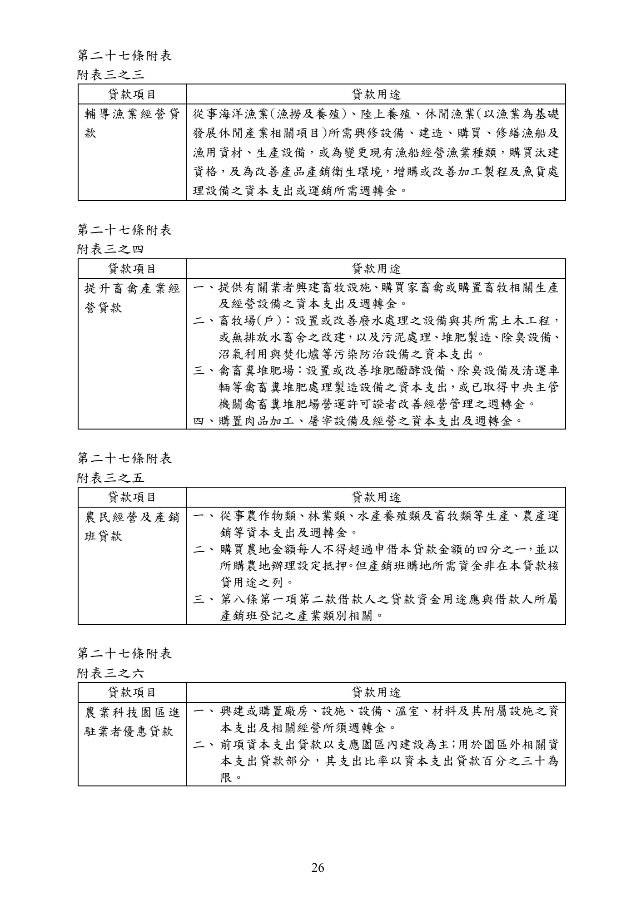
展開查看PDF原始文字層
第二十七條附表 附表三之三 貸款項目 貸款用途 輔導漁業經營貸 款 從事海洋漁業(漁撈及養殖)、陸上養殖、休閒漁業(以漁業為基礎 發展休閒產業相關項目)所需興修設備、建造、購買、修繕漁船及 漁用資材、生產設備，或為變更現有漁船經營漁業種類，購買汰建 資格，及為改善產品產銷衛生環境，增購或改善加工製程及魚貨處 理設備之資本支出或運銷所需週轉金。 第二十七條附表 附表三之四 貸款項目 貸款用途 提升畜禽產業經 營貸款 一、提供有關業者興建畜牧設施 、 購買家畜禽或購置畜牧相關生產 及經營設備之資本支出及週轉金。 二、畜牧場(戶)：設置或改善廢水處理之設備與其所需土木工程， 或無排放水畜舍之改建 ， 以及污泥處理 、 堆肥製造 、 除臭設備 、 沼氣利用與焚化爐等污染防治設備之資本支出。 三、禽畜糞堆肥場：設置或改善堆肥醱酵設備、除臭設備及清運車 輛等禽畜糞堆肥處理製造設備之資本支出 ， 或已取得中央主管 機關禽畜糞堆肥場營運許可證者改善經營管理之週轉金。 四、購置肉品加工、屠宰設備及經營之資本支出及週轉金。 第二十七條附表 附表三之五 貸款項目 貸款用途 農民經營及產銷 班貸款 一、 從事農作物類、林業類、水產養殖類及畜牧類等生產、農產運 銷等資本支出及週轉金。 二、 購買農地金額每人不得超過申借本貸款金額的四分之ㄧ ， 並以 所購農地辦理設定抵押 。 但產銷班購地所需資金非在本貸款核 貸用途之列。 三、 第八條第一項第二款借款人之貸款資金用途應與借款人所屬 產銷班登記之產業類別相關。 第二十七條附表 附表三之六 貸款項目 貸款用途 農業科技園區進 駐業者優惠貸款 一、 興建或購置廠房、設施、設備、溫室、材料及其附屬設施之資 本支出及相關經營所須週轉金。 二、 前項資本支出貸款以支應園區內建設為主 ； 用於園區外相關資 本支出貸款部分，其支出比率以資本支出貸款百分之三十為 限。
手冊頁：27 PDF頁：29／359
{kind=link}
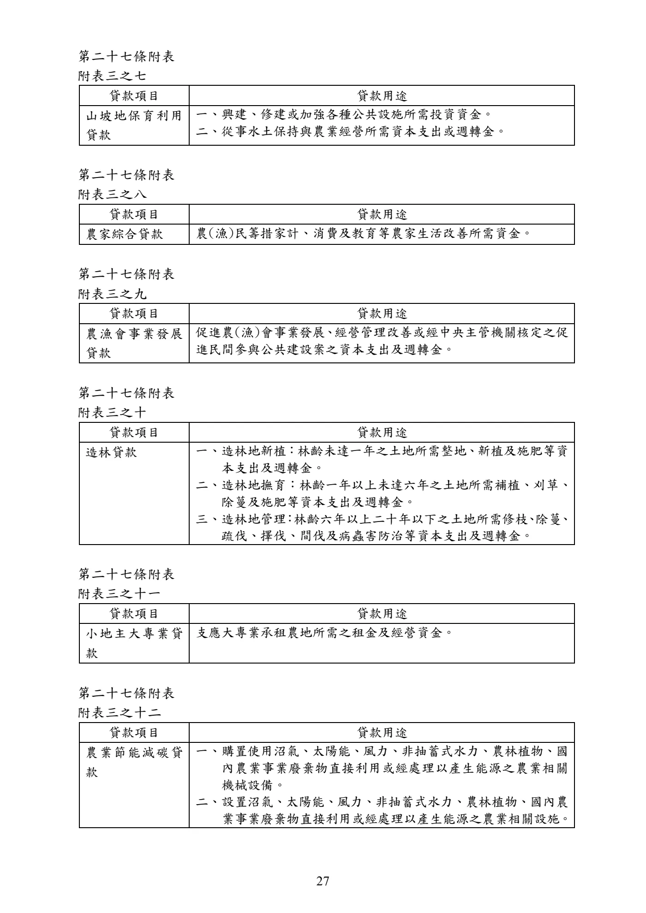
展開查看PDF原始文字層
第二十七條附表 附表三之七 貸款項目 貸款用途 山坡地保育利用 貸款 一、興建、修建或加強各種公共設施所需投資資金。 二、從事水土保持與農業經營所需資本支出或週轉金。 第二十七條附表 附表三之八 貸款項目 貸款用途 農家綜合貸款 農(漁)民籌措家計、消費及教育等農家生活改善所需資金。 第二十七條附表 附表三之九 貸款項目 貸款用途 農漁會事業發展 貸款 促進農(漁)會事業發展 、 經營管理改善或經中央主管機關核定之促 進民間參與公共建設案之資本支出及週轉金。 第二十七條附表 附表三之十 貸款項目 貸款用途 造林貸款 一、造林地新植：林齡未達一年之土地所需整地、新植及施肥等資 本支出及週轉金。 二、造林地撫育：林齡一年以上未達六年之土地所需補植、刈草、 除蔓及施肥等資本支出及週轉金。 三、造林地管理 ： 林齡六年以上二十年以下之土地所需修枝 、 除蔓 、 疏伐、擇伐、間伐及病蟲害防治等資本支出及週轉金。 第二十七條附表 附表三之十一 貸款項目 貸款用途 小地主大 專業 貸 款 支應大專業承租農地所需之租金及經營資金。 第二十七條附表 附表三之十二 貸款項目 貸款用途 農業節能減碳貸 款 一、 購置使用沼氣、太陽能、風力、非抽蓄式水力、農林植物、國 內農業事業廢棄物直接利用或經處理以產生能源之農業相關 機械設備。 二、 設置沼氣、太陽能、風力、非抽蓄式水力、農林植物、國內農 業事業廢棄物直接利用或經處理以產生能源之農業相關設施。
手冊頁：28 PDF頁：30／359

展開查看PDF原始文字層
第二十七條附表 附表三之十三修正規定 貸款項目 貸款用途 青壯年農民 從農 貸款 提供青壯年從事農業生產與其相關之農產運銷及電子商務等所需 之資本支出及週轉金 。 但借款人資格符合第十六條第一項第一款第 八目或第三款者，得用於直接從事農產運銷及電子商務所需資金。 第二十七條附表 附表三之十四 貸款項目 貸款用途 休閒農場貸款 經營休閒農場所需建造 、 改善休閒農業設施之資本支出或經營所需 週轉金。但購地所需資金非在本貸款核貸用途之列。 第二十七條附表 附表三之十五 貸款項目 貸款用途 農民組織及農企 業產銷經營及研 發創新貸款 一、 本貸款用途為從事農、林、漁、牧業生產、農產運銷、外銷集 貨供應、電子商務及研究發展等所需之資本支出及營運所需 週轉金。 二、 前點貸款用途不包括購地所需資金。 第二十七條附表 附表三之十六 貸款項目 貸款用途 農民組織及農企 業天然災害復耕 復建貸款 農民組織或農企業災後復耕復建之用。 第二十七條附表 附表三之十七 貸款項目 貸款用途 農業保險貸款 本貸款用途為提供要保人繳納農業保險之保險費所需資金。 第二十七條附表 附表三之十八 貸款項目 貸款用途 農民紓困貸款 支應農(漁)民遭遇特殊緊急情況時所需週轉金。
手冊頁：29 PDF頁：31／359
{kind=link}
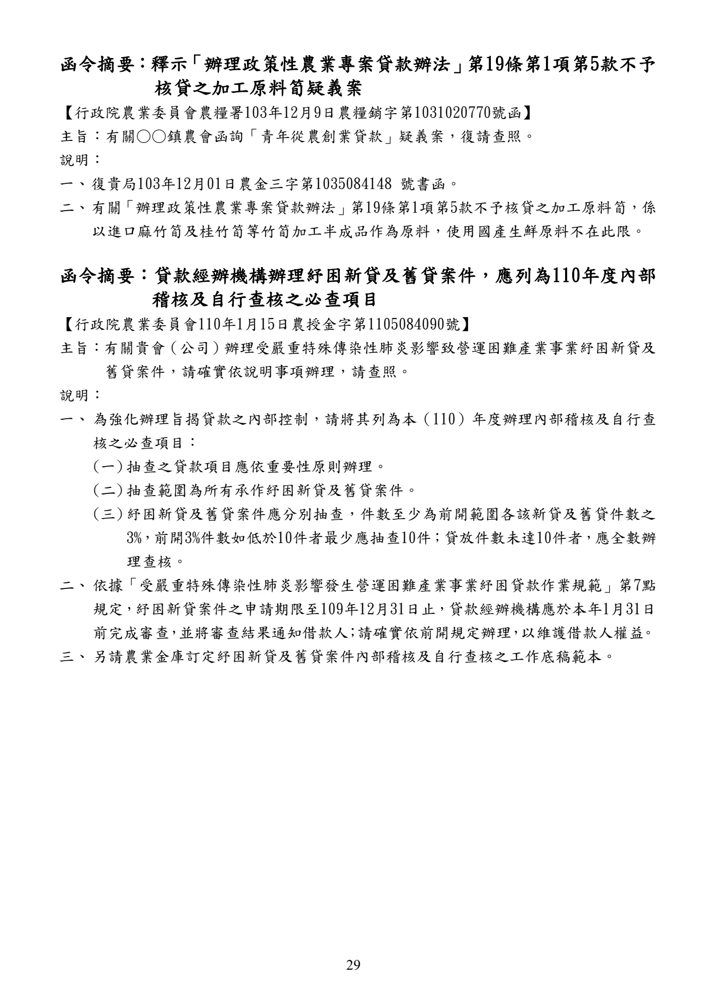
展開查看PDF原始文字層
函令摘要 ：釋示 「辦理政策性農業專案貸款辦法」 第19條第1項第5款不予 核貸之加工原料筍疑義案 【行政院農業委員會農糧署103年12月9日農糧銷字第1031020770號函】 主旨：有關○○鎮農會函詢「青年從農創業貸款」疑義案，復請查照。 說明： 一、 復貴局103年12月01日農金三字第1035084148 號書函。 二、 有關 「辦理政策性農業專案貸款辦法」 第19條第1項第5款不予核貸之加工原料筍，係 以進口麻竹筍及桂竹筍等竹筍加工半成品作為原料，使用國產生鮮原料不在此限。 函令摘要：貸款經辦機構辦理紓困新貸及舊貸案件，應列為110年度內部 稽核及自行查核之必查項目 【行政院農業委員會110年1月15日 農授金字第1105084090號】 主旨：有關貴會（公司） 辦理受嚴重特殊傳染性肺炎影響致營運困難產業事業紓困新貸及 舊貸案件，請確實依說明事項辦理，請查照。 說明： 一、 為強化辦理旨揭貸款之內部控制，請將其列為本（110）年度辦理內部稽核及自行查 核之必查項目： (一) 抽查之貸款項目應依重要性原則辦理。 (二) 抽查範圍為所有承作紓困新貸及舊貸案件。 (三) 紓困新貸及舊貸案件應分別抽查，件數至少為前開範圍各該新貸及舊貸件數之 3%， 前開3%件數如低於10件者最少應抽查10件 ； 貸放件數未達10件者 ， 應全數辦 理查核。 二、 依據「受嚴重特殊傳染性肺炎影響發生營運困難產業事業紓困貸款作業規範」第7點 規定 ， 紓困新貸案件之申請期限至109年12月31日止 ， 貸款經辦機構應於本年1月31日 前完成審查 ， 並將審查結果通知借款人 ； 請確實依前開規定辦理 ， 以維護借款人權益 。 三、 另請農業金庫訂定紓困新貸及舊貸案件內部稽核及自行查核之工作底稿範本。